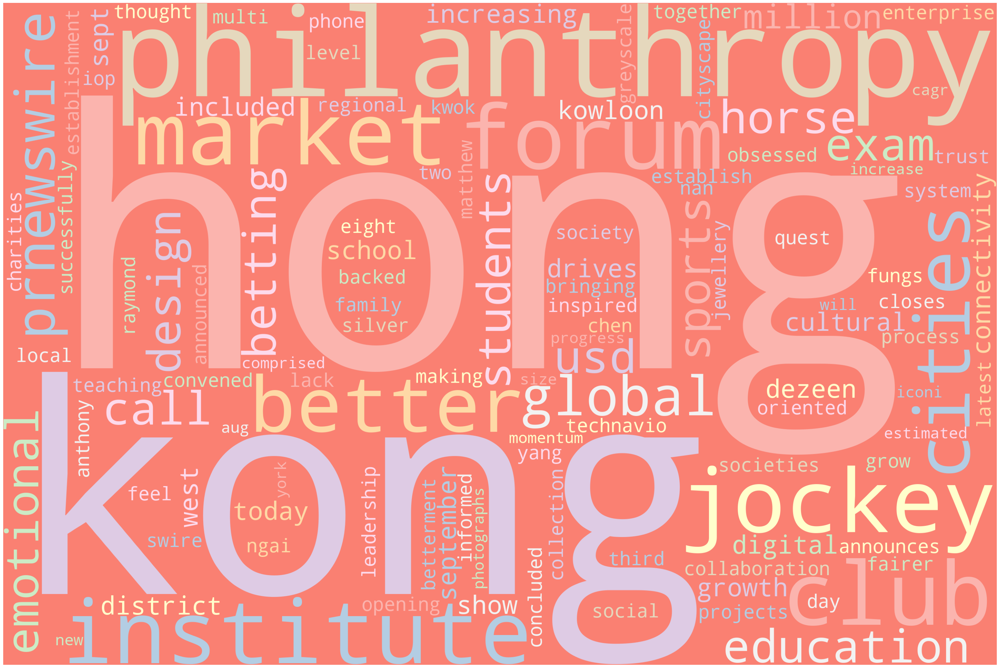

import requests
import json
import re
import pandas as pd
from sklearn.feature_extraction.text import CountVectorizerText Data Cleaning
Setting up an API for HKJC Racing News
baseURL = "https://newsapi.org/v2/everything?"
total_requests=2
verbose=True
API_KEY='c42b8e84aab24c85af001b27015206b3'
TOPIC='horse racing'URLpost = {'apiKey': API_KEY,
'q': '+'+TOPIC,
'sortBy': 'relevancy',
'totalRequests': 1}
print(baseURL)
# print(URLpost)
#GET DATA FROM API
response = requests.get(baseURL, URLpost) #request data from the server
# print(response.url);
response = response.json() #extract txt data from request into json
print(json.dumps(response, indent=2))
# #GET TIMESTAMP FOR PULL REQUEST
from datetime import datetime
timestamp = datetime.now().strftime("%Y-%m-%d-H%H-M%M-S%S")
# SAVE TO FILE
with open(timestamp+'-newapi-raw-data.json', 'w') as outfile:
json.dump(response, outfile, indent=4)https://newsapi.org/v2/everything?
{
"status": "ok",
"totalResults": 387,
"articles": [
{
"source": {
"id": null,
"name": "Gizmodo.com"
},
"author": "Lucas Ropek",
"title": "Snoop Dogg's a Dungeon Master and All of Meta\u2019s Other AI Announcements",
"description": "Every tech company in existence is currently racing to cram as much AI into their product base as possible, so it\u2019s not at all surprising that Meta\u2019s annual Connect event was flush with such developments this year. In addition to a number of new VR and \u201cmetav\u2026",
"url": "https://gizmodo.com/meta-connect-ai-snoop-dogg-dungeon-master-emu-1850878978",
"urlToImage": "https://i.kinja-img.com/gawker-media/image/upload/c_fill,f_auto,fl_progressive,g_center,h_675,pg_1,q_80,w_1200/d4588eb41a04a29414c0c0f966ae96c8.jpg",
"publishedAt": "2023-09-27T20:41:58Z",
"content": "Every tech company in existence is currently racing to cram as much AI into their product base as possible, so its not at all surprising that Metas annual Connect event was flush with such developmen\u2026 [+2799 chars]"
},
{
"source": {
"id": null,
"name": "PetaPixel"
},
"author": "Pesala Bandara",
"title": "Jockey Blames Photographer For Distracting Horse in $1.8 Million Race",
"description": "A jockey has blamed a photographer for distracting his horse in the closing stages of winning a $1.8 million (\u00a31.5 million) race -- for which he was punished with a careless riding ban.\n[Read More]",
"url": "https://petapixel.com/2023/10/18/jockey-blames-photographer-for-distracting-horse-in-1-8-million-race/",
"urlToImage": "https://petapixel.com/assets/uploads/2023/10/jockey-blames-photographer-spooking-horse.jpg",
"publishedAt": "2023-10-18T17:08:23Z",
"content": "A jockey has blamed a photographer for distracting his horse in the closing stages of winning a $1.8 million (\u00a31.5 million) race \u2014 for which he was punished with a careless riding ban.\r\nJockey Ben Me\u2026 [+1966 chars]"
},
{
"source": {
"id": "bbc-news",
"name": "BBC News"
},
"author": null,
"title": "Constitution Hill to stay over hurdles",
"description": "Racing star Constitution Hill will stay over hurdles and to switch to fences, trainer Nicky Henderson says.",
"url": "https://www.bbc.co.uk/sport/horse-racing/66857811",
"urlToImage": "https://ichef.bbci.co.uk/live-experience/cps/624/cpsprodpb/BFCF/production/_131130194_gettyimages-1481913567.jpg",
"publishedAt": "2023-09-19T14:07:55Z",
"content": "Constitution Hill has won all seven of his starts over hurdles\r\nConstitution Hill will be aimed at another Champion Hurdle win this season, says trainer Nicky Henderson.\r\nHe was described as 'the hor\u2026 [+1694 chars]"
},
{
"source": {
"id": "time",
"name": "Time"
},
"author": "TIME PR",
"title": "TIME for Kids Announces \u2018Service Stars\u2019 to Spotlight Young People Making Positive Change",
"description": "The New Program Made Possible by The Allstate Foundation Will Provide Inspiration and Resources to Help Kids Serve Their Community Today, TIME for Kids announced Service Stars, a new program for young people ages 8-14 who want to make the world a brighter pla\u2026",
"url": "https://time.com/6323185/time-for-kids-announces-service-stars/",
"urlToImage": "https://api.time.com/wp-content/uploads/2023/10/SS_FinalLogo.png",
"publishedAt": "2023-10-16T12:00:00Z",
"content": "The New Program Made Possible by The Allstate Foundation Will Provide Inspiration and Resources to Help Kids Serve Their Community\r\nToday, TIME for Kids announced Service Stars, a new program for you\u2026 [+2860 chars]"
},
{
"source": {
"id": "bbc-news",
"name": "BBC News"
},
"author": null,
"title": "Welsh race to support Williams family amid daughter's cancer worry",
"description": "A \"golden era\" of Welsh jockeys will race at Chepstow on Friday to help support trainer Christian Williams and his family after his daughter's leukaemia diagnosis.",
"url": "https://www.bbc.co.uk/sport/horse-racing/67077654",
"urlToImage": "https://ichef.bbci.co.uk/live-experience/cps/624/cpsprodpb/13DA7/production/_131391318_shutterstock_editorial_14029418w.jpg",
"publishedAt": "2023-10-11T11:25:12Z",
"content": "Chepstow Racecourse is the home of the Welsh Grand National\r\nWelsh horse racing is enjoying a \"golden era\" but rarely has the chance to gather to celebrate its depth of talent.\r\nThat will change on F\u2026 [+3196 chars]"
},
{
"source": {
"id": null,
"name": "Playstation.com"
},
"author": "Marcus Dawson",
"title": "Teardown is coming to PS5 on November 15",
"description": "Hello again, everyone. In May, we announced that our voxel-based destruction game would be coming to PlayStation 5. Now, I\u2019m excited to share that Teardown will land on consoles on November 15, 2023, and it is our immense privilege to announce that the game w\u2026",
"url": "https://blog.playstation.com/2023/09/28/teardown-is-coming-to-ps5-on-november-15/",
"urlToImage": "https://blog.playstation.com/tachyon/2023/09/3ee88b0eb69e646eb7348e8c7c371a6226690ea5.jpeg",
"publishedAt": "2023-09-28T12:00:57Z",
"content": "Hello again, everyone. In May, we announced that our voxel-based destruction game would be coming to PlayStation 5. Now, Im excited to share that Teardown will land on consoles on November 15, 2023, \u2026 [+3497 chars]"
},
{
"source": {
"id": "bbc-news",
"name": "BBC News"
},
"author": null,
"title": "Significantly earns Fanning maiden Ayr Gold Cup",
"description": "A late surge from Significantly earned jockey Joe Fanning a first Ayr Gold Cup victory on Saturday.",
"url": "https://www.bbc.co.uk/sport/horse-racing/66902018",
"urlToImage": "https://ichef.bbci.co.uk/live-experience/cps/624/cpsprodpb/343D/production/_131237331_d88dd4c2a20c7e5698b71752e2a4d17c359b1c1b.jpg",
"publishedAt": "2023-09-23T15:48:07Z",
"content": "Significantly emerged from a congested pack to take victory\r\nA late surge from Significantly earned jockey Joe Fanning a first Ayr Gold Cup victory on Saturday.\r\nRichard Fahey's 16-1 Ramazan looked s\u2026 [+1154 chars]"
},
{
"source": {
"id": "espn",
"name": "ESPN"
},
"author": null,
"title": "Cricket, flag football added as '28 Olympic sports",
"description": "The International Olympic Committee, on Monday, added five sports to the 2028 Los Angeles Games: cricket, flag football, baseball-softball, lacrosse and squash.",
"url": "https://www.espn.com/olympics/story/_/id/38670676/cricket-flag-football-5-sports-added-2028-olympics",
"urlToImage": "https://a.espncdn.com/combiner/i?img=%2Fi%2Fcricket%2Fcricinfo%2F1402184_900x506.jpg",
"publishedAt": "2023-10-16T11:50:51Z",
"content": "Oct 16, 2023, 06:18 AM ET\r\nCricket is an Olympic sport again. Flag football gets in for the first time.\r\nFive sports were finally added to the 2028 Los Angeles Games by the International Olympic Comm\u2026 [+4856 chars]"
},
{
"source": {
"id": null,
"name": "Psychology Today"
},
"author": "Janet L. Jones Ph.D.",
"title": "How Horses and Humans See Color",
"description": "Color vision differs strongly between horses and humans. Applying this knowledge yields better horse-human performance and fewer injuries.",
"url": "https://www.psychologytoday.com/intl/blog/horse-brain-human-brain/202310/how-horses-and-humans-see-color",
"urlToImage": "https://cdn2.psychologytoday.com/assets/styles/manual_crop_1_91_1_1528x800/public/field_blog_entry_images/2023-10/steeplechase%20Paul%20Flickr.jpg?itok=uH3Y38g8",
"publishedAt": "2023-10-13T23:27:28Z",
"content": "Sitting on a horse, its easy to assume that she sees the same view we see. But she doesnt. Riding is a team sport in which two partners experience the world simultaneously but in very different ways.\u2026 [+3148 chars]"
},
{
"source": {
"id": null,
"name": "Los Angeles Times"
},
"author": "John Cherwa",
"title": "CHRB makes move to better enforce a horse racing rule it created",
"description": "CHRB looks for software solution for rule it put in place but didn't have resources to enforce. The Jockey Club IT management asked to come up with a fix.",
"url": "https://www.latimes.com/sports/story/2023-10-17/chrb-makes-move-to-better-enforce-a-horse-racing-rule-it-created",
"urlToImage": "https://ca-times.brightspotcdn.com/dims4/default/1fef1a6/2147483647/strip/true/crop/3000x1575+0+173/resize/1200x630!/quality/75/?url=https%3A%2F%2Fcalifornia-times-brightspot.s3.amazonaws.com%2F7a%2Fac%2Fbea0ef884331b61280038839593d%2Fap-19064742819699.jpg",
"publishedAt": "2023-10-18T02:10:26Z",
"content": "The California Horse Racing Board announced on Tuesday it is working with The Jockey Club to come up with an IT solution to a rule change that was seemingly unenforceable in real time. The move comes\u2026 [+2905 chars]"
},
{
"source": {
"id": null,
"name": "Highsnobiety"
},
"author": null,
"title": "Legends Live On\u2014Porsche and TAG Heuer Add Another Chapter to the Panamericana",
"description": "As the world comes to Mexico to watch first hand as a new generation leaves its mark on the Panamericana, we are reminded that legends are not confined to history books or distant stars but continue to write the stories of today.",
"url": "https://www.highsnobiety.com/p/legends-live-on-porsche-and-tag-heuer/",
"urlToImage": "https://www.highsnobiety.com/static-assets/dato/1696318862-dsc0086-2.jpg",
"publishedAt": "2023-10-06T15:40:50Z",
"content": "In the grand tapestry of time, some legends endure like ancient constellations, their heroes etched into history. Others, however, remain unshackled by time, and remain dynamic. They are actors in th\u2026 [+5654 chars]"
},
{
"source": {
"id": "bbc-news",
"name": "BBC News"
},
"author": null,
"title": "Grand National field to be cut in safety move",
"description": "The Grand National will be reduced to a maximum of 34 runners from 40 as part of measures designed to improve safety.",
"url": "https://www.bbc.co.uk/sport/horse-racing/67078770",
"urlToImage": "https://ichef.bbci.co.uk/live-experience/cps/624/cpsprodpb/9DF7/production/_131393404_gettyimages-1482427739.jpg",
"publishedAt": "2023-10-12T09:31:43Z",
"content": "Corach Rambler won the 2023 Grand National at Aintree\r\nThe Grand National will be reduced to a maximum of 34 runners from 40 as part of measures designed to improve safety.\r\nOne horse died in this ye\u2026 [+4932 chars]"
},
{
"source": {
"id": "business-insider",
"name": "Business Insider"
},
"author": "Jenny McGrath",
"title": "How 1880s technology made it possible for 2 women to travel around the world in under 80 days",
"description": "In 1889, Nellie Bly and Elizabeth Bisland went around the world. Making the trip in under 80 days required trains, ships, and other technology.",
"url": "https://www.businessinsider.com/nellie-bly-elizabeth-bisland-around-the-world-technology-2023-10",
"urlToImage": "https://i.insider.com/651e4922617692f0d03faa02?width=1200&format=jpeg",
"publishedAt": "2023-10-07T16:09:02Z",
"content": "Nellie Bly in her traveling dress and coat.Bettmann/Getty Images\r\n<ul>\n<li>In 1889, journalist Nellie Bly set off on a trip around the world, trying to make it under 80 days.</li>\n<li>Shortly after, \u2026 [+16124 chars]"
},
{
"source": {
"id": null,
"name": "ReadWrite"
},
"author": "Michael Graw",
"title": "13 New Bitcoin Casinos to Join in 2023",
"description": "The integration of blockchain technology into the iGaming industry gave rise to numerous new crypto casino sites. Only a handful, [\u2026]\nThe post 13 New Bitcoin Casinos to Join in 2023 appeared first on ReadWrite.",
"url": "https://readwrite.com/cryptocurrency/new-bitcoin-casinos/",
"urlToImage": "https://readwrite.com/wp-content/uploads/2023/10/new-bitcoin-casinos.png",
"publishedAt": "2023-10-04T11:02:53Z",
"content": "The integration of blockchain technology into the iGaming industry gave rise to numerous newcrypto casino sites. Only a handful, however, have the makings of top-quality gaming platforms. To help you\u2026 [+31784 chars]"
},
{
"source": {
"id": null,
"name": "Los Angeles Times"
},
"author": "John Cherwa",
"title": "Why a trainer with 527 violations is still racing horses at Santa Anita",
"description": "An examination of the factors behind Dan Blacker's 527 CHRB violations found there are reasons this wasn't caught earlier and he is not suspended.",
"url": "https://www.latimes.com/sports/story/2023-10-16/why-a-trainer-with-527-violations-is-still-running-at-santa-anita",
"urlToImage": "https://ca-times.brightspotcdn.com/dims4/default/82561c3/2147483647/strip/true/crop/2400x1260+0+170/resize/1200x630!/quality/75/?url=https%3A%2F%2Fcalifornia-times-brightspot.s3.amazonaws.com%2F97%2Fc1%2F5e0940d94d3bbd852aaf1793f0f3%2Fla-photos-1staff-467475-sp-0927-santa-anita-autumn-meet-013.IK.jpg",
"publishedAt": "2023-10-16T11:00:28Z",
"content": "Santa Anita Park has made a point of trying to be a leader when it comes to horse safety, often proactive in its enforcement of rules, even before official adjudication.\r\nBut now, it is raising some \u2026 [+7349 chars]"
},
{
"source": {
"id": "breitbart-news",
"name": "Breitbart News"
},
"author": "Katherine Hamilton, Katherine Hamilton",
"title": "Exclusive: Republican AGs Endorse Bill to Repeal, Replace Horse Racing Law \u2018Devised Behind Closed Doors\u2019",
"description": "Several Republican attorneys general have endorsed a bill that would repeal and replace a highly influential horse racing law they say was \"devised behind closed doors.\"",
"url": "https://www.breitbart.com/politics/2023/09/29/exclusive-republican-ags-endorse-bill-repeal-replace-horse-racing-law-devised-behind-closed-doors/",
"urlToImage": "https://media.breitbart.com/media/2023/09/GettyImages-173059977-640x335.jpg",
"publishedAt": "2023-09-30T00:21:36Z",
"content": "Several Republican attorneys general have endorsed a bill that would repeal and replace a highly influential horse racing law they say was \u201cdevised behind closed doors.\u201d\r\nBreitbart News exclusively o\u2026 [+6318 chars]"
},
{
"source": {
"id": "abc-news-au",
"name": "ABC News (AU)"
},
"author": "Adam Langenberg",
"title": "Disposal of Tasmanian racehorses 'an affront' to community, as interim report calls for change",
"description": "Tasmania's harness racing industry needs enforceable rules be put in place around the transfer and disposal of horses, an interim report finds \u2014 but integrity expert Ray Murrihy is yet to make findings on race-fixing allegations.",
"url": "https://www.abc.net.au/news/2023-09-20/tasracing-interim-report-released-ray-murrihy/102878496",
"urlToImage": "https://live-production.wcms.abc-cdn.net.au/d6537b6ab39b22624c198d86c8d16fba?impolicy=wcms_crop_resize&cropH=2592&cropW=4608&xPos=0&yPos=345&width=862&height=485",
"publishedAt": "2023-09-20T03:00:41Z",
"content": "Quick read\r\n<ul><li>In short: Racing integrity expert Ray Murrihy's interim report into Tasmania's harness racing industry has been released.</li><li>It recommends enforceable rules be put in place a\u2026 [+5274 chars]"
},
{
"source": {
"id": null,
"name": "Mental Floss"
},
"author": "Ellen Gutoskey",
"title": "The Stories Behind 8 Famous Photos",
"description": "From Elvis Presley wearing a velvet suit to meet Richard Nixon to the migrant mother who unwittingly became the face of the Great Depression, these are the true stories behind a few iconic photographs from history.",
"url": "https://www.mentalfloss.com/posts/stories-behind-famous-photos",
"urlToImage": "https://images2.minutemediacdn.com/image/upload/c_crop,w_2119,h_1191,x_0,y_221/c_fill,w_1440,ar_16:9,f_auto,q_auto,g_auto/images/voltaxMediaLibrary/mmsport/mentalfloss/01hcx0magw0apetgfagf.jpg",
"publishedAt": "2023-10-17T16:00:00Z",
"content": "A pictures worth a thousand wordsbut sometimes, you also want the words. Discover the who, when, where, why, and how behind some of historys most iconic photosfrom Elvis Presley wearing a velvet suit\u2026 [+15658 chars]"
},
{
"source": {
"id": null,
"name": "MMA Fighting"
},
"author": "Guilherme Cruz",
"title": "Trophy and heartbreak: A day at the races with Charles Oliveira",
"description": "Judging by Charles Oliveira\u2019s pre-race emotions, his love for harness racing might be even bigger than fighting.",
"url": "https://www.mmafighting.com/2023/9/19/23875013/trophy-heartbreak-day-harness-racing-charles-oliveira-ufc",
"urlToImage": "https://cdn.vox-cdn.com/thumbor/4TDVNTIPN9eU_9bwRKS4fxEqeSQ=/121x80:1159x623/fit-in/1200x630/cdn.vox-cdn.com/uploads/chorus_asset/file/24924121/charles_image.jpg",
"publishedAt": "2023-09-19T13:00:00Z",
"content": "Renan Fernandes\r\n\n \n\n\n CAMPINAS, Brazil \u2014 It\u2019s a hot Saturday morning, and the Viracopos Hippodrome is packed. Hundreds of people have gathered from all over the country on Sept. 9 with their best ho\u2026 [+6781 chars]"
},
{
"source": {
"id": null,
"name": "Los Angeles Times"
},
"author": "John Cherwa",
"title": "Road to the 2024 Kentucky Derby starts Saturday at Santa Anita",
"description": "The American Pharoah is the first Kentucky Derby points race on the West Coast this season. The card has three Breeders' Cup qualifying races.",
"url": "https://www.latimes.com/sports/story/2023-10-05/santa-anita-kentucky-derby-american-pharoah",
"urlToImage": "https://ca-times.brightspotcdn.com/dims4/default/f31a31e/2147483647/strip/true/crop/5030x2641+0+418/resize/1200x630!/quality/75/?url=https%3A%2F%2Fcalifornia-times-brightspot.s3.amazonaws.com%2F03%2Ffe%2F2b4dbb7f4d4ca3bfcb9cab32dd1a%2Fbelmont-future-horse-racing-98772.jpg",
"publishedAt": "2023-10-05T17:36:41Z",
"content": "The start of the West Coast path to the Kentucky Derby starts Saturday at Santa Anita Park with the running of the Grade 1 $300,000 American Pharoah Stakes. But, the new question facing the business \u2026 [+4651 chars]"
},
{
"source": {
"id": null,
"name": "Los Angeles Times"
},
"author": "John Cherwa",
"title": "Breeders' Cup Classic field starts to fill in with Slow Down Andy win",
"description": "A lot of horses have already arrived at Santa Anita for the Breeders' Cup. Awesome Again win by Slow Down Andy puts another Southern California horse in the field.",
"url": "https://www.latimes.com/sports/story/2023-10-01/breeders-cup-classic-field-slow-down-andy",
"urlToImage": "https://ca-times.brightspotcdn.com/dims4/default/e106995/2147483647/strip/true/crop/2521x1323+0+313/resize/1200x630!/quality/75/?url=https%3A%2F%2Fcalifornia-times-brightspot.s3.amazonaws.com%2F40%2F88%2F2494f4a345e3aa669cdbecee1d38%2Fsanta-anita-horse-racing-41949.jpg",
"publishedAt": "2023-10-01T21:04:31Z",
"content": "If you want to see some of the best race horses in the country, if not the world, it may benefit you to show up most mornings at Clockers Corner, the Santa Anita gathering spot for workouts, breezes \u2026 [+4871 chars]"
},
{
"source": {
"id": "abc-news-au",
"name": "ABC News (AU)"
},
"author": "Ondine Slack-Smith and David Claughton",
"title": "Races providing much-needed 'outlet' for farmers scratched as drought threatens regional NSW",
"description": "NSW Racing has cancelled two\u00a0country race meetings due to safety concerns over dry tracks, angering a community\u00a0struggling with the looming prospect of\u00a0drought.",
"url": "https://www.abc.net.au/news/2023-09-22/come-by-chance-geurie-meets-cancelled-nsw-racing-dry-track/102890840",
"urlToImage": "https://live-production.wcms.abc-cdn.net.au/243203882949d78e105f4370c55b6014?impolicy=wcms_crop_resize&cropH=343&cropW=610&xPos=0&yPos=0&width=862&height=485",
"publishedAt": "2023-09-22T08:40:14Z",
"content": "NSW Racing has cancelled two\u00a0country race meetings due to safety concerns over dry tracks, angering a community\u00a0struggling with the looming prospect of\u00a0drought.\r\nKey points:\r\n<ul><li>Three country ra\u2026 [+3209 chars]"
},
{
"source": {
"id": null,
"name": "CBS Sports"
},
"author": "CBS Sports Staff",
"title": "Coolmore Turf Mile 2023 predictions, odds, contenders, lineup: Horse racing expert reveals picks, bets",
"description": "Gene Menez has studied the 2023 Coolmore Turf Mile field and locked in his picks for the $1 million race at Keeneland",
"url": "https://www.cbssports.com/general/news/coolmore-turf-mile-2023-predictions-odds-contenders-lineup-horse-racing-expert-reveals-picks-bets/",
"urlToImage": "https://sportshub.cbsistatic.com/i/r/2023/05/06/d8f2a585-1eff-45a0-ad4c-26f3668fd560/thumbnail/1200x675/8d39bc375954b0d2b48f9bcebdd4d650/usatsi-churchill-horses.jpg",
"publishedAt": "2023-10-07T13:30:46Z",
"content": "The Todd Pletcher-trained Annapolis will try to defend his title when he leaves the starting gate in the 2023 Coolmore Turf Mile on Saturday at Keeneland Race Course. A four-year-old son of War Front\u2026 [+3263 chars]"
},
{
"source": {
"id": null,
"name": "Forbes"
},
"author": "Kenneth Rapoza, Senior Contributor, \n Kenneth Rapoza, Senior Contributor\n https://www.forbes.com/sites/kenrapoza/",
"title": "Bored Ape Yacht Club Owners Restructuring Emblematic Of NFT Shakeup; Billions Lost In Value",
"description": "NFTs may be dead. But some remaining aficionados and industry experts still think otherwise and here\u2019s why.",
"url": "https://www.forbes.com/sites/digital-assets/2023/10/10/bored-ape-yacht-club-owners-restructuring-emblematic-of-nft-shakeup-billions-lost-in-value/",
"urlToImage": "https://imageio.forbes.com/specials-images/imageserve/65256917154e1b241d6a2226/0x0.jpg?format=jpg&height=900&width=1600&fit=bounds",
"publishedAt": "2023-10-10T16:00:13Z",
"content": "People gather at the grand opening of the Bored & Hungry pop-up burger restaurant, which uses NFT ... [+] art for its branding, on April 9, 2022 in Long Beach, California. It seems to be out of b\u2026 [+10272 chars]"
},
{
"source": {
"id": null,
"name": "The Boston Globe"
},
"author": "Maddie Browning",
"title": "New middle grade novel tells the story of first female Black jockey",
"description": "NYT reporter and brother of Cheryl White tell Cheryl\u2019s story in \"The Jockey and Her Horse.\"",
"url": "https://www.bostonglobe.com/2023/10/12/arts/new-middle-grade-novel-tells-story-first-female-black-jockey/",
"urlToImage": "https://bostonglobe-prod.cdn.arcpublishing.com/resizer/MKKHiwxu2oQObNl26_4PrIFdCtg=/506x0/cloudfront-us-east-1.images.arcpublishing.com/bostonglobe/DRGKEBUITFBRNPZ4CKAYXVNPG4.jpg",
"publishedAt": "2023-10-12T14:00:00Z",
"content": "Cheryl Whites name may not sound familiar, but she was a trailblazer in the equestrian world, becoming the first licensed female Black jockey at 17 years old in 1971. Over her two-decade career, she \u2026 [+2407 chars]"
},
{
"source": {
"id": null,
"name": "Just Jared"
},
"author": "Just Jared",
"title": "Get to Know Gran Turismo's Pepe Barroso With These 10 Fun Facts (Exclusive)",
"description": "Pepe Barroso made his Hollywood debut alongside the likes of Orlando Bloom and David Harbour in this summer\u2019s racing movie Gran Turismo, and that\u2019s just the tip of the iceberg for the up-and-coming actor. Hailing from Spain, Pepe brought Antonio Cruz to life \u2026",
"url": "https://www.justjared.com/2023/10/12/get-to-know-gran-turismos-pepe-barroso-with-these-10-fun-facts-exclusive/",
"urlToImage": "https://cdn.justjared.com/wp-content/uploads/headlines/2023/10/pepe-facts.jpg",
"publishedAt": "2023-10-12T14:00:28Z",
"content": "Pepe Barroso made his Hollywood debut alongside the likes of Orlando Bloom and David Harbour in this summer\u2019s racing movie Gran Turismo, and that\u2019s just the tip of the iceberg for the up-and-coming a\u2026 [+1135 chars]"
},
{
"source": {
"id": null,
"name": "Pinkbike.com"
},
"author": "Betsy Welch",
"title": "Photo Report: lnside the Inaugural Durango Derby",
"description": "Mountain bike racing is back in Durango with four stages of in-town singletrack and too much fun.( Photos: 48 )",
"url": "https://www.pinkbike.com/news/gallery-mountain-bike-racing-is-back-in-durango-lnside-the-inaugural-durango-derby.html",
"urlToImage": "https://ep1.pinkbike.org/p4pb25609854/p4pb25609854.jpg",
"publishedAt": "2023-09-27T07:00:00Z",
"content": "Words by Betsy WelchPhotos by Alex Roszko\r\nDurango didn't need Sepp Kuss' Vuelta a Espa\u00f1a win to earn its stamp on the map as a cycling hotbed, but it certainly gave everyone in the southwestern Colo\u2026 [+5222 chars]"
},
{
"source": {
"id": null,
"name": "[Removed]"
},
"author": null,
"title": "[Removed]",
"description": "[Removed]",
"url": "https://removed.com",
"urlToImage": null,
"publishedAt": "1970-01-01T00:00:00Z",
"content": "[Removed]"
},
{
"source": {
"id": "cnn",
"name": "CNN"
},
"author": "Laura Studley",
"title": "4 horses have died at a San Francisco Bay Area race track within a 2-week span",
"description": "Four horses have died at Golden Gate Fields in the San Francisco Bay Area in the past two weeks, California Horse Racing Board spokesperson Mike Marten told CNN on Tuesday.",
"url": "https://www.cnn.com/2023/10/03/sport/california-horse-racing-deaths-spt/index.html",
"urlToImage": "https://media.cnn.com/api/v1/images/stellar/prod/231003191714-golden-gate-fields-file-2018-restricted.jpg?c=16x9&q=w_800,c_fill",
"publishedAt": "2023-10-04T00:16:16Z",
"content": "Four horses have died at Golden Gate Fields in the San Francisco Bay Area in the past two weeks, California Horse Racing Board spokesperson Mike Marten told CNN on Tuesday. \r\nTwo of the horses, a 5- \u2026 [+1451 chars]"
},
{
"source": {
"id": null,
"name": "The Indian Express"
},
"author": "Soumyarendra Barik",
"title": "E-gaming cos look to absorb GST through cashbacks, bonuses",
"description": "Fearing that passing on the GST deduction on deposits to their wallets could result in a loss of customers, many online gaming companies have decided to foot the bill for \u201cas long as possible\u201d, a senior gaming company executive told The Indian Express.",
"url": "https://indianexpress.com/article/business/companies/e-gaming-cos-look-to-absorb-gst-through-cashbacks-bonuses-8967189/",
"urlToImage": "https://images.indianexpress.com/2023/10/Gaming-Pixabay.jpg",
"publishedAt": "2023-10-03T18:59:33Z",
"content": "Even as the industry deals with the fallout of the new goods and service tax (GST), online gaming companies have come up with a new idea to avoid losing customers by absorbing the GST deduction and c\u2026 [+2984 chars]"
},
{
"source": {
"id": null,
"name": "CNA"
},
"author": null,
"title": "Horse racing-Dettori reverses retirement decision, says will race in US",
"description": "Italian jockey Frankie Dettori has made a U-turn on his plans to retire at the end of the year, announcing on Thursday that he will continue his career in the United States.Dettori, who has ridden more than 3,300 winners and claimed three champion jockey titl\u2026",
"url": "https://www.channelnewsasia.com/sport/horse-racing-dettori-reverses-retirement-decision-says-will-race-us-3840531",
"urlToImage": "https://onecms-res.cloudinary.com/image/upload/s--0IswP_Zk--/fl_relative,g_south_east,l_one-cms:core:watermark:reuters,w_0.1/f_auto,q_auto/c_fill,g_auto,h_676,w_1200/v1/one-cms/core/2023-10-12t091336z_1_lynxmpej9b0e0_rtroptp_3_horseracing-dettori.jpg?itok=Im7eAZR7",
"publishedAt": "2023-10-12T09:13:36Z",
"content": "Italian jockey Frankie Dettori has made a U-turn on his plans to retire at the end of the year, announcing on Thursday that he will continue his career in the United States.\r\nDettori, who has ridden \u2026 [+956 chars]"
},
{
"source": {
"id": null,
"name": "CNA"
},
"author": null,
"title": "Horse racing-Grand National cuts number of horses, moves first fence for safety reasons",
"description": "The number of horses participating in the 2024 Grand National will be reduced from 40 to 34, the Jockey Club said on Thursday, among other changes introduced for safety reasons.The race, one of the highest-profile events in Britain's sporting calendar, regula\u2026",
"url": "https://www.channelnewsasia.com/sport/horse-racing-grand-national-cuts-number-horses-moves-first-fence-safety-reasons-3841551",
"urlToImage": "https://onecms-res.cloudinary.com/image/upload/s--glUC6AOF--/f_auto,q_auto/c_fill,g_auto,h_676,w_1200/v1/mediacorp/one-cms/images/2021-06/sport.png?itok=38AArLr4",
"publishedAt": "2023-10-12T15:04:26Z",
"content": "The number of horses participating in the 2024 Grand National will be reduced from 40 to 34, the Jockey Club said on Thursday, among other changes introduced for safety reasons.\r\nThe race, one of the\u2026 [+1262 chars]"
},
{
"source": {
"id": null,
"name": "Minneapolis Star Tribune"
},
"author": "Paul Walsh",
"title": "Prison for member of prominent Minnesota horse-racing family who cheated investors out of millions",
"description": "Jason Bullard has admitted to bilking investors out of more than $3 million.",
"url": "https://www.startribune.com/prison-for-member-of-prominent-minnesota-horse-racing-family-who-cheated-investors-out-of-millions/600312549/",
"urlToImage": "https://chorus.stimg.co/25006203/bullardhome.JPG?h=630&w=1200&fit=crop&bg=999&crop=faces",
"publishedAt": "2023-10-16T16:21:52Z",
"content": "A member of one of Minnesota's most prominent horse-racing families has received a prison term topping four years after admitting he ran a Ponzi scheme that bilked millions of dollars from dozens of \u2026 [+3025 chars]"
},
{
"source": {
"id": null,
"name": "Los Angeles Times"
},
"author": "John Cherwa",
"title": "Preakness winner heads stakes race fields as Santa Anita starts fall meet",
"description": "The first weekend at Santa Anita has nine stakes races highlighted on Saturday by Preakness winner National Treasure in the Awesome Again Stakes.",
"url": "https://www.latimes.com/sports/story/2023-09-28/santa-anita-awesome-again-preakness-winner",
"urlToImage": "https://ca-times.brightspotcdn.com/dims4/default/474062e/2147483647/strip/true/crop/4420x2320+0+514/resize/1200x630!/quality/75/?url=https%3A%2F%2Fcalifornia-times-brightspot.s3.amazonaws.com%2F48%2F41%2F3af69bbf4a4a838a91be3104d3ba%2Fpreakness-horse-racing-92403.jpg",
"publishedAt": "2023-09-28T23:17:26Z",
"content": "Santa Anita opens its fall meeting Friday with higher than normal anticipation because it closes with the Breeders Cup on Nov. 3-4. What that means is a mad dash to get in as many big races as possib\u2026 [+5382 chars]"
},
{
"source": {
"id": null,
"name": "[Removed]"
},
"author": null,
"title": "[Removed]",
"description": "[Removed]",
"url": "https://removed.com",
"urlToImage": null,
"publishedAt": "1970-01-01T00:00:00Z",
"content": "[Removed]"
},
{
"source": {
"id": null,
"name": "BusinessLine"
},
"author": "M Meyyappan",
"title": "Why horse racing needs low GST rate",
"description": "Horse racing differs significantly from online gaming and gambling. The government needs to relook the 28% GST rate",
"url": "https://www.thehindubusinessline.com/opinion/why-horse-racing-needs-low-gst-rate/article67331286.ece",
"urlToImage": "https://bl-i.thgim.com/public/incoming/158ki3/article67331295.ece/alternates/LANDSCAPE_1200/DSC_1801.jpg",
"publishedAt": "2023-09-21T15:05:42Z",
"content": "The GST Councils announcement of 28 per cent GST on the amount wagered or deposited for all online or offline gaming or gambling, has led to loud protests from the online gaming and gambling industry\u2026 [+5158 chars]"
},
{
"source": {
"id": null,
"name": "Crikey"
},
"author": "Julia Bergin",
"title": "\u2018Bring your own horse\u2019: What did a remote Indigenous community do on referendum day?",
"description": "Dust-heavy, shade-light and set to a backdrop of billowing smoke. Welcome to community horse racing. \nThe post \u2018Bring your own horse\u2019: What did a remote Indigenous community do on referendum day? appeared first on Crikey.",
"url": "https://www.crikey.com.au/2023/10/16/ltyentye-apurte-horse-race-voice-to-parliament-referendum/",
"urlToImage": "https://www.crikey.com.au/wp-content/uploads/2023/10/IMG_3707-copy.jpg",
"publishedAt": "2023-10-16T00:16:00Z",
"content": "On Saturday, October 14, the national conversation was all polling booths, political appearances and last-minute pitches for a Yes-No vote on the Indigenous Voice to Parliament referendum. But in the\u2026 [+676 chars]"
},
{
"source": {
"id": "fox-sports",
"name": "Fox Sports"
},
"author": "Chris Fallica",
"title": "FOX Super 6 NFL contest: Chris 'The Bear' Fallica's Week 6 picks",
"description": "Will you be the next FOX Super 6 winner? If you need a little help, Chris \"The Bear\" Fallica has you covered with his picks.",
"url": "https://www.foxsports.com/stories/nfl/fox-super-6-nfl-contest-chris-the-bear-fallicas-week-6-picks",
"urlToImage": "https://a57.foxsports.com/statics.foxsports.com/www.foxsports.com/content/uploads/2023/10/1408/814/10.13.23_Bears-Bets-Recap_16x9-1.jpg?ve=1&tl=1",
"publishedAt": "2023-10-13T17:33:43Z",
"content": "What's better than watching the NFL? Winning free money!\r\nYou can partake in the best of both worlds this weekend with our new free-to-play FOX Super 6 game.\r\nHow do you play? Enter the NFL Super 6 c\u2026 [+5435 chars]"
},
{
"source": {
"id": null,
"name": "Yahoo Entertainment"
},
"author": "Sam Nussey",
"title": "Capcom shares lunge 6% on 'Monster Hunter' mobile launch",
"description": "Japanese video game company Capcom enjoyed a 6% jump in its stock price on Monday as gamers flocked to the mobile instalment of its long-running \"Monster...",
"url": "https://finance.yahoo.com/news/capcom-shares-lunge-6-monster-075652863.html",
"urlToImage": "https://media.zenfs.com/en/reuters.com/b2f34c5459cce1c0565674cb004d9a69",
"publishedAt": "2023-09-25T07:56:52Z",
"content": "By Sam Nussey\r\nTOKYO (Reuters) - Japanese video game company Capcom enjoyed a 6% jump in its stock price on Monday as gamers flocked to the mobile instalment of its long-running \"Monster Hunter\" fran\u2026 [+1270 chars]"
},
{
"source": {
"id": "newsweek",
"name": "Newsweek"
},
"author": "Melissa Fleur Afshar",
"title": "Ex-Race Horse Running at High Speed Before Falling Over Viewed by Almost 5M",
"description": "One user wrote: \"Just gets up and keeps running like nothing happened.\"",
"url": "https://www.newsweek.com/ex-race-horse-running-high-speed-before-falling-over-viewed-millions-1829195",
"urlToImage": "https://d.newsweek.com/en/full/2285637/horse.jpg",
"publishedAt": "2023-09-23T13:30:01Z",
"content": "A social-media video of an ex-race horse speeding through a field, only to slip and fall down a small hill, has left shocked viewers across the internet.\r\nThe viral moment has been viewed by almost 5\u2026 [+2319 chars]"
},
{
"source": {
"id": null,
"name": "Techpowerup.com"
},
"author": "GFreeman",
"title": "(PR) Thrustmaster Unveils Ferrari 488 GT3 Wheel Add-On",
"description": "Thrustmaster is thrilled to unveil its new racing wheel rim specially designed for competition, in partnership with Ferrari: Ferrari 488 GT3 Wheel Add-On. This new wheel rim is a 1:1 scale replica of the wheel from the most successful car in the Prancing Hors\u2026",
"url": "https://www.techpowerup.com/314188/thrustmaster-unveils-ferrari-488-gt3-wheel-add-on",
"urlToImage": "https://www.techpowerup.com/img/lpZVDbjRUnI3W3jP.jpg",
"publishedAt": "2023-09-28T10:09:01Z",
"content": "Thrustmaster is thrilled to unveil its new racing wheel rim specially designed for competition, in partnership with Ferrari: Ferrari 488 GT3 Wheel Add-On. This new wheel rim is a 1:1 scale replica of\u2026 [+3956 chars]"
},
{
"source": {
"id": null,
"name": "Rlsbb.ru"
},
"author": "saamaan1@yahoo.com (Master)",
"title": "The Gentleman Magazine - Issue 41 2023",
"description": "The Gentleman Magazine is a British print & online publication celebrating everything from Fashion, Lifestyle, Automotive, Food & Drink, Horse Racing, Technology and more. Providing \"Everything For Every Gent\"The Gentleman Magazine - Issue 41 2023English | 10\u2026",
"url": "https://rlsbb.ru/the-gentleman-magazine-issue-41-2023/",
"urlToImage": null,
"publishedAt": "2023-10-11T15:41:44Z",
"content": "The Gentleman Magazine is a British print & online publication celebrating everything from Fashion, Lifestyle, Automotive, Food & Drink, Horse Racing, Technology and more. Providing \"Everythi\u2026 [+134 chars]"
},
{
"source": {
"id": null,
"name": "Moneycontrol"
},
"author": "Moneycontrol News",
"title": "Delta Corp up 1% post bulk deal in its shares",
"description": "Around 17.7 lakh shares \u00e2\u0080\u0094 equivalent to 0.7 percent of the equity \u00e2\u0080\u0094 worth Rs 24.3 crore changed hands at an average price of Rs 137.9 per share. The identities of the buyer and seller of these shares were undisclosed",
"url": "https://www.moneycontrol.com/news/business/stocks/delta-corp-shares-up-1-post-bulk-deal-in-its-shares-11481911.html",
"urlToImage": "https://images.moneycontrol.com/static-mcnews/2022/08/delta-corp-goa-casino-770x433.jpg",
"publishedAt": "2023-10-05T07:52:40Z",
"content": "Shares of Delta Corp Ltd\u00a0were up approximately 1.36 percent on October 5 following reports of a bulk deal in the company's shares. At 12.30 pm, the stock was trading at Rs 137.65 on the National Stoc\u2026 [+1533 chars]"
},
{
"source": {
"id": null,
"name": "The Boston Globe"
},
"author": "Sarah Ryley",
"title": "A greyhound racing magnate needed to sell the old Brockton Fairgrounds. The city made an offer.",
"description": "After several failed attempts at a revival, the family who has controlled the Brockton Fairgrounds since the 1950s, the Carneys, put the 66 acres up for sale. They didn\u2019t have to look far to find a buyer.",
"url": "https://www.bostonglobe.com/2023/10/04/metro/carneys-brockton-fairgrounds/",
"urlToImage": "https://bostonglobe-prod.cdn.arcpublishing.com/resizer/qBSO0Kq_Ym2Hiz5jtIXO5ewkfEo=/506x0/cloudfront-us-east-1.images.arcpublishing.com/bostonglobe/UKCWOZ2IWTIXNFFAJV4SOG27DE.jpg",
"publishedAt": "2023-10-04T10:20:06Z",
"content": "The deal, which still needs City Council approval, has touched off a controversyin the cash-strapped city of 105,000. Skeptics question why Brockton would take on debt equivalent to 11 percent of its\u2026 [+6912 chars]"
},
{
"source": {
"id": null,
"name": "Matadornetwork.com"
},
"author": "Erin Donahue",
"title": "Where To Stay, Eat, and Play in Ruidoso, New Mexico",
"description": "Ruidoso, New Mexico, is home to the southernmost ski resort in the United States, but is a true all-season destination.",
"url": "https://matadornetwork.com/read/things-to-do-ruidoso-new-mexico/",
"urlToImage": "https://cdn1.matadornetwork.com/blogs/1/2023/09/RuidosoMidtown_Mural-social.jpeg",
"publishedAt": "2023-09-27T16:43:45Z",
"content": "Things to do in and around Ruidoso, New Mexico\r\nBack Country Attitudes\r\nLet your adventurous spirit go wild with a thrilling off-roading experience with Back Country Attitudes. Choose between a 2-hou\u2026 [+5826 chars]"
},
{
"source": {
"id": null,
"name": "TheJournal.ie"
},
"author": "Eoghan Dalton",
"title": "'Apparent discrepancy' discovered in horse racing board's payments to jockey funds",
"description": "It amounts to a discrepancy of almost \u20ac50,000 across three organisations.",
"url": "https://www.thejournal.ie/horse-racing-board-jockey-funds-6195536-Oct2023/",
"urlToImage": "https://img2.thejournal.ie/article/6195536/river/?height=400&version=6196203",
"publishedAt": "2023-10-14T06:30:52Z",
"content": "THERE HAVE BEEN calls for Irish horseracings regulatory body to explain an alleged discrepancy in tens of thousands of euro it has provided to various charitible organisations in the sector.\r\nThe fig\u2026 [+3696 chars]"
},
{
"source": {
"id": "fox-sports",
"name": "Fox Sports"
},
"author": "Chris Fallica",
"title": "FOX Super 6 NFL contest: Chris 'The Bear' Fallica's Week 3 picks",
"description": "Play the FOX Super 6 game for your chance to win some free money! And if you need some tips, FOX Sports Wagering Expert Chris \"The Bear\" Fallica has you covered with his picks.",
"url": "https://www.foxsports.com/stories/nfl/fox-super-6-nfl-contest-chris-the-bear-fallicas-week-3-picks",
"urlToImage": "https://a57.foxsports.com/statics.foxsports.com/www.foxsports.com/content/uploads/2023/09/1408/814/5cf0b2e3-09.20.23_S6-Week-3-illustrations_16x9.jpg?ve=1&tl=1",
"publishedAt": "2023-09-21T20:48:39Z",
"content": "What's better than watching the NFL? Watching football and earning free money!\r\nYou can partake in the best of both worlds this weekend with our new free-to-play FOX Super 6 game.\r\nHow do you play? E\u2026 [+3487 chars]"
},
{
"source": {
"id": "fox-sports",
"name": "Fox Sports"
},
"author": "Chris Fallica",
"title": "2023 NFL Week 4 odds, predictions, best bets by Chris 'The Bear' Fallica",
"description": "Chris \"The Bear\" Fallica delivers his best bets for NFL Week 4. Read to see which wager he likes in the Patriots-Cowboys game.",
"url": "https://www.foxsports.com/stories/nfl/2023-nfl-week-4-odds-predictions-best-bets-by-chris-the-bear-fallica",
"urlToImage": "https://a57.foxsports.com/statics.foxsports.com/www.foxsports.com/content/uploads/2023/09/1408/814/09.07.23_Bears-Bets-NFL-Draft_16x9.jpg?ve=1&tl=1",
"publishedAt": "2023-09-28T17:36:54Z",
"content": "\"Bear Bets\" are real wagers that Chris \"The Bear\" Fallica is actually making.\r\nWe had a good showing last week, so let's keep the good times going in Week 4 of the NFL season.\r\nNothing makes football\u2026 [+2514 chars]"
},
{
"source": {
"id": null,
"name": "Los Angeles Times"
},
"author": "Julia Wick",
"title": "Bass' homelessness czar Mercedes M\u00e1rquez to be replaced by Lourdes Castro Ram\u00edrez",
"description": "M\u00e1rquez has held one of the more visible roles in an administration that's been predominantly focused on the city's homelessness crisis.",
"url": "https://www.latimes.com/california/story/2023-10-02/bass-homelessness-czar-mercedes-marquez-to-be-replaced-by-lourdes-castro-ramirez",
"urlToImage": "https://ca-times.brightspotcdn.com/dims4/default/eb743c6/2147483647/strip/true/crop/2457x1290+0+174/resize/1200x630!/quality/75/?url=https%3A%2F%2Fcalifornia-times-brightspot.s3.amazonaws.com%2F3f%2Fab%2F3e8470974606ad3723b0bc35fc15%2Fmercedesmarquez-lourdescastroramirez.JPG",
"publishedAt": "2023-10-03T03:28:40Z",
"content": "Mayor Karen Bass homelessness czar, Mercedes M\u00e1rquez, will leave her high-profile post next month, with state housing official Lourdes Castro Ram\u00edrez set to succeed her, the mayors office announced M\u2026 [+2821 chars]"
},
{
"source": {
"id": null,
"name": "Bakedbree.com"
},
"author": "BakedBree",
"title": "How to Make a Mint Julep",
"description": "It\u2019s off the races with this classic Mint Julep, a Southern favorite that is a sure bet no matter where you live. On the first Saturday in May, all eyes are on the grand Churchhill Downs for the Kentucky Derby. As a Bluegrass State native, I\u2019m all about horse\u2026",
"url": "https://bakedbree.com/mint-julep-recipe",
"urlToImage": "https://bakedbree.com/wp-content/uploads/2023/09/Mint-Julep-Featured_3-scaled.jpg",
"publishedAt": "2023-09-27T22:09:20Z",
"content": "Share this post \r\nIt\u2019s off the races with this classic Mint Julep, a Southern favorite that is a sure bet no matter where you live.\r\nOn the first Saturday in May, all eyes are on the grand Churchhill\u2026 [+4021 chars]"
},
{
"source": {
"id": null,
"name": "Minneapolis Star Tribune"
},
"author": "Rachel Blount",
"title": "Canterbury trainer Nevada Litfin lands five-month suspension, $3,500 fine",
"description": "Nevada Litfin, a longtime Canterbury Park trainer, violated racehorse medication rules.",
"url": "https://www.startribune.com/canterbury-park-trainer-nevada-litfin-five-month-suspension-3500-fine/600308054/",
"urlToImage": "https://chorus.stimg.co/24957950/merlin_71651785.jpg?h=630&w=1200&fit=crop&bg=999&crop=faces",
"publishedAt": "2023-09-27T22:54:43Z",
"content": "Nevada Litfin, a longtime trainer at Canterbury Park, has been suspended for five months and fined $3,500 for violating racehorse medication rules.\r\nThe sanctions were announced by the Horseracing In\u2026 [+1285 chars]"
},
{
"source": {
"id": null,
"name": "Celebitchy.com"
},
"author": "Kaiser",
"title": "Sky News boss: Media is \u2018too supine, too incurious, too compliant\u2019 about royals",
"description": "Here are some photos of King Charles and Queen Camilla from the past week. They were busy too, just like Prince William and Kate. Nothing lights a fire under the Windsors\u2019 asses like the Duke and Duchess of Sussex getting attention, I swear to God. Charles wa\u2026",
"url": "https://www.celebitchy.com/835986/sky_news_boss_media_is_too_supine_too_incurious_too_compliant_about_royals/",
"urlToImage": null,
"publishedAt": "2023-09-19T12:00:45Z",
"content": "Here are some photos of King Charles and Queen Camilla from the past week. They were busy too, just like Prince William and Kate. Nothing lights a fire under the Windsors asses like the Duke and Duch\u2026 [+8602 chars]"
},
{
"source": {
"id": "abc-news-au",
"name": "ABC News (AU)"
},
"author": "ABC News",
"title": "'Unbelievable' Think About It wins $20 million Everest at Randwick",
"description": "Think About It wins the $20 million Everest at Randwick, beating I Wish I Win and Private Eye in the world's richest thoroughbred race on turf.",
"url": "https://www.abc.net.au/news/2023-10-14/think-about-it-wins-everest-race-at-randwick/102977054",
"urlToImage": "https://live-production.wcms.abc-cdn.net.au/e2aad6b26989b748047608083b7af3c9?impolicy=wcms_crop_resize&cropH=1816&cropW=3228&xPos=0&yPos=135&width=862&height=485",
"publishedAt": "2023-10-14T06:46:38Z",
"content": "Think About It's stunning winning sequence has continued at Randwick, with the exciting sprinter beating a stellar field in a thrilling finish to the $20 million The Everest.\r\nKey points:\r\n<ul><li>Th\u2026 [+2263 chars]"
},
{
"source": {
"id": "al-jazeera-english",
"name": "Al Jazeera English"
},
"author": "Al Jazeera",
"title": "\u2018Kids whose insides are destroyed\u2019: The return of drug abuse to Mauritius",
"description": "Mauritius grapples with a drug epidemic of unprecedented proportions, years after use and peddling peaked in the '90s.",
"url": "https://www.aljazeera.com/features/2023/10/4/kids-whose-insides-are-destroyed-the-return-of-drug-abuse-to-mauritius",
"urlToImage": "https://www.aljazeera.com/wp-content/uploads/2023/10/Employees-at-the-Idrice-Goomany-Treatment-Centre-where-Gaetan-has-just-completed-a-treatment-programme-1696425651.jpeg?resize=1920%2C1440",
"publishedAt": "2023-10-04T14:43:28Z",
"content": "Port Louis, Mauritius Until early 2022, Gaetan (real name withheld) was earning a decent living as a construction worker, helping on sites around Mauritius, when he made a snap decision that would tu\u2026 [+7934 chars]"
},
{
"source": {
"id": null,
"name": "Bikeexif.com"
},
"author": "Ben Pilatti",
"title": "Speed Read: A Suzuki SV650 retro racer and more",
"description": "Leading the charge this week is a custom Suzuki SV650 that has no business looking as good as it does, courtesy of Australia\u2019s Purpose Built Moto. In hot pursuit are a carbon-clad Ducati XDiavel, a Manga-inspired Honda CB750 Hornet, and a wild BMW R1250RS dra\u2026",
"url": "https://www.bikeexif.com/custom-motorcycle-news-october-1-2023",
"urlToImage": "https://kickstart.bikeexif.com/wp-content/uploads/2023/10/fb.jpg",
"publishedAt": "2023-10-01T17:20:31Z",
"content": "Leading the charge this week is a custom Suzuki SV650 that has no business looking as good as it does, courtesy of Australia\u2019s Purpose Built Moto. In hot pursuit are a carbon-clad Ducati XDiavel, a M\u2026 [+9307 chars]"
},
{
"source": {
"id": "bbc-news",
"name": "BBC News"
},
"author": null,
"title": "Francis Lee: 'One of Manchester City's most important figures'",
"description": "Francis Lee will be regarded as one of the most important figures in the history of Manchester City, writes BBC Sport's Phil McNulty.",
"url": "https://www.bbc.co.uk/sport/football/66988018",
"urlToImage": "https://ichef.bbci.co.uk/live-experience/cps/624/cpsprodpb/064B/production/_131311610_gettyimages-2633748.jpg",
"publishedAt": "2023-10-02T18:50:09Z",
"content": "Francis Lee, who has died aged 79, can rightly be regarded as one of the most important figures in the history of Manchester City.\r\nLee was part of the golden triangle of superstars along with Colin \u2026 [+7433 chars]"
},
{
"source": {
"id": null,
"name": "Tuttomercatoweb.com"
},
"author": "Dimitri Conti",
"title": "Roma, si racconta Azmoun: \"Il mio idolo \u00e8 Ali Daei, il pi\u00f9 grande risultato in nazionale\"",
"description": "Sardar Azmoun, attaccante iraniano acquistato in estate dalla Roma, ha rilasciato una breve intervista personale da botta e risposta ai canali social della societ\u00e0 giallorossa. \nQuale \u00e8 il suo sopra",
"url": "https://www.tuttomercatoweb.com/serie-a/roma-si-racconta-azmoun-il-mio-idolo-e-ali-daei-il-piu-grande-risultato-in-nazionale-1887718",
"urlToImage": "https://tmw-storage.tcccdn.com/storage/tuttomercatoweb.com/img_notizie/thumb3/2d/2d3e3cf8cc7201c360f4c4cff3b61499-26147-oooz0000.jpeg",
"publishedAt": "2023-10-12T21:47:00Z",
"content": "Sardar Azmoun, attaccante iraniano acquistato in estate dalla Roma, ha rilasciato una breve intervista personale da botta e risposta ai canali social della societ\u00e0 giallorossa. \r\nQuale \u00e8 il suo sopra\u2026 [+286 chars]"
},
{
"source": {
"id": null,
"name": "Biztoc.com"
},
"author": "benzinga.com",
"title": "Game of Silks' Crypto-Powered Horse Racing Startup Raises $5M, Despite Industry Funding At A Low",
"description": "Fantasy horse racing startup Game of Silks raised $5 million, bringing its total funding to more than $10 million since it began. The startup, launched in 2021, enables consumers to buy NFTs and earn rewards on horse racing. Veterans of the horse racing space\u2026",
"url": "https://biztoc.com/x/b6466d8ce2648bf3",
"urlToImage": "https://c.biztoc.com/p/b6466d8ce2648bf3/s.webp",
"publishedAt": "2023-10-11T23:00:12Z",
"content": "Fantasy horse racing startup Game of Silks raised $5 million, bringing its total funding to more than $10 million since it began. The startup, launched in 2021, enables consumers to buy NFTs and earn\u2026 [+305 chars]"
},
{
"source": {
"id": null,
"name": "Purseblog.com"
},
"author": "Megs Mahoney Dusil",
"title": "The Bags Carried to Longchamp At the Races Party",
"description": "One thing the fashion industry knows how to do is throw a party, and many times, the party is a multi-pronged fete. Two weeks ago, Maison Longchamp organized an evening at the Hip\u00f3dromo de Par\u00eds-Longchamp, home to the oldest mill in Paris. And yes, this inspi\u2026",
"url": "https://www.purseblog.com/longchamp/the-bags-carried-to-longchamp-at-the-races-party/",
"urlToImage": "https://static.purseblog.com/images/2023/09/Yevgeniya-Topyer-Krist-Renee-Gezelle-Megan-Suri-Chloe-Crane-Leroux-et-Larsen-Thompson.jpg",
"publishedAt": "2023-09-20T22:46:20Z",
"content": "One thing the fashion industry knows how to do is throw a party, and many times, the party is a multi-pronged fete. Two weeks ago, Maison Longchamp organized an evening at the Hip\u00f3dromo de Par\u00eds-Long\u2026 [+1342 chars]"
},
{
"source": {
"id": null,
"name": "The Punch"
},
"author": "Chidiebube Okeoma",
"title": "Police arrest man for allegedly stealing horse in Niger",
"description": "Security personnel apprehended a man from Kaduna State who was allegedly involved in the theft of two horses in Niger. The suspect had made plans to transport the stolen horses to Kaduna State but was apprehended. The Niger State Police Command PRO, Wasiu Abi\u2026",
"url": "https://punchng.com/police-arrest-man-for-allegedly-stealing-horse-in-niger/",
"urlToImage": "https://cdn.punchng.com/wp-content/uploads/2023/09/09012507/Police.jpg",
"publishedAt": "2023-10-12T13:49:51Z",
"content": "Security personnel apprehended a man from Kaduna State who was allegedly involved in the theft of two horses in Niger.\r\nThe suspect had made plans to transport the stolen horses to Kaduna State but w\u2026 [+1412 chars]"
},
{
"source": {
"id": null,
"name": "Radaronline.com"
},
"author": "Ryan Leaver",
"title": "DraftKings Kentucky Promo Code Delivers Bet $5, Get $200 in Bonus Bets for NFL and NCAAF",
"description": "Sports fans in Kentucky looking to place a wager on any football action this week can use this DraftKings promo code to take advantage of a Bet $5, Get $200 in Bonus Bets deal.",
"url": "https://radaronline.com/sports-betting/draftkings-kentucky-promo-code-delivers-bet-5-get-200-in-bonus-bets-for-nfl-and-ncaaf/",
"urlToImage": "https://media.radaronline.com/brand-img/mHQO1tt9q/1200x628/ro-dk-newoffer-1200x628-1695900290249.jpg",
"publishedAt": "2023-09-28T14:00:00Z",
"content": "DraftKings stands out as a premier sportsbook in the heart of Kentucky as the state eagerly embraces online sports betting. The launch of Kentucky's online sports betting platform is unfolding at thi\u2026 [+1562 chars]"
},
{
"source": {
"id": null,
"name": "Small Business Trends"
},
"author": "Gabrielle Pickard-Whitehead",
"title": "Inspirational Sports Quotes to Inspire Your Team Towards Success",
"description": "An extensive collection of inspirational sports quotes related to business, leadership and teamwork.",
"url": "https://smallbiztrends.com/2023/10/inspirational-sports-quotes.html",
"urlToImage": "https://media.smallbiztrends.com/2019/06/impossible-possible-motivational-risk-taking-quote.png",
"publishedAt": "2023-10-17T13:00:02Z",
"content": "Looking for inspirational sports quotes? Many of the greatest inspirational quotes that can inspire entrepreneurs and business owners to persevere in the pursuit of their dreams come from successful \u2026 [+19734 chars]"
},
{
"source": {
"id": null,
"name": "The Star Online"
},
"author": "IMRAN HILMY, TAN SIN CHOW",
"title": "Traditional calendars, diaries still in demand by the Chinese community",
"description": "GEORGE TOWN: Traditional calendars and diaries continue to remain bestsellers despite the popularity and convenience of digital organisers. Read full story",
"url": "https://www.thestar.com.my/news/nation/2023/10/12/traditional-calendars-diaries-still-in-demand-by-the-chinese-community",
"urlToImage": "https://apicms.thestar.com.my/uploads/images/2023/10/12/2331172.jpg",
"publishedAt": "2023-10-11T16:00:00Z",
"content": "GEORGE TOWN: Traditional calendars and diaries continue to remain bestsellers despite the popularity and convenience of digital organisers.\r\nSeveral printing operators have seen at least a 10% increa\u2026 [+2252 chars]"
},
{
"source": {
"id": null,
"name": "The Punch"
},
"author": "Our Reporters",
"title": "Man arrested for stealing two horses from Niger farm",
"description": "Men of the Niger State Police Command have arrested one Ahmed Aliyu for allegedly stealing two horses from a farm. The suspect, who hails from Zaria, Kaduna State, was said to have been visiting the farm in Chekungi village via Bida, under the guise of horse \u2026",
"url": "https://punchng.com/man-arrested-for-stealing-two-horses-from-niger-farm/",
"urlToImage": "https://cdn.punchng.com/wp-content/uploads/2023/10/12234846/ALIYU-AND-STOLEN-HORSE.jpg",
"publishedAt": "2023-10-13T00:43:37Z",
"content": "Men of the Niger State Police Command have arrested one Ahmed Aliyu for allegedly stealing two horses from a farm.\r\nThe suspect, who hails from Zaria, Kaduna State, was said to have been visiting the\u2026 [+1343 chars]"
},
{
"source": {
"id": null,
"name": "Japan Today"
},
"author": null,
"title": "Ace Impact makes it six from six to win Arc de Triomphe",
"description": "Favourite Ace Impact gave trainer Jean-Claude Rouget and jockey Cristian Demuro their second win in four years in Europe's most prestigious race the Prix de l'Arc de Triomphe on Sunday. Demuro had trouble getting aboard the horse before the race but had no pr\u2026",
"url": "https://japantoday.com/category/sports/ace-impact-makes-it-six-from-six-to-win-arc-de-triomphe1",
"urlToImage": null,
"publishedAt": "2023-10-01T21:43:12Z",
"content": "Favourite Ace Impact gave trainer Jean-Claude Rouget and jockey Cristian Demuro their second win in four years in Europe's most prestigious race the Prix de l'Arc de Triomphe on Sunday.\r\nDemuro had t\u2026 [+3636 chars]"
},
{
"source": {
"id": null,
"name": "Garbageday.email"
},
"author": "Ryan Broderick",
"title": "This Is What An Unmoderated Internet Looks Like",
"description": "\"I\u2019ve seen so much content reported, debunked and rebunked (?) that I think I\u2019ve reached the limits of my mind\u2019s ability to understand reality.\"",
"url": "https://www.garbageday.email/p/this-is-what-an-unmoderated-internet",
"urlToImage": "https://substackcdn.com/image/fetch/w_1200,h_600,c_fill,f_jpg,q_auto:good,fl_progressive:steep,g_auto/https%3A%2F%2Fsubstack-post-media.s3.amazonaws.com%2Fpublic%2Fimages%2F41ace482-78bc-4cc2-a8df-f90d0b86e453_1222x1388.png",
"publishedAt": "2023-10-16T08:24:27Z",
"content": "In February 2022, when Russia invaded Ukraine, I wrote a piece called Everything will be all the time and everywhere, where I essentially used social media, but mainly Twitter, to construct a ticking\u2026 [+13775 chars]"
},
{
"source": {
"id": null,
"name": "Zacjohnson.com"
},
"author": "Zac Johnson",
"title": "Michael Owen Net Worth \u2013 How Much is Michael Worth?",
"description": "Michael Owen, a former English professional football player, has an estimated net worth of $70 million as of 2023. During his career, he played for top clubs such as Liverpool, Real Madrid, Newcastle United, and Manchester United, earning significant earnings\u2026",
"url": "https://zacjohnson.com/michael-owen-net-worth/",
"urlToImage": "https://zacjohnson.com/wp-content/uploads/2023/09/michael-owen-assets.jpg",
"publishedAt": "2023-09-29T01:23:37Z",
"content": "Michael Owen, a former English professional football player, has an estimated net worth of $70 million as of 2023. During his career, he played for top clubs such as Liverpool, Real Madrid, Newcastle\u2026 [+17352 chars]"
},
{
"source": {
"id": null,
"name": "The Boston Globe"
},
"author": "Stan Grossfeld",
"title": "Conquering fear in the saddle",
"description": "\u201cAs I See It,\u201d a weekly photo column by Pulitzer Prize winner Stan Grossfeld, brings the stories of New England to Globe readers. This week Grossfeld takes us to the The Cumberland County Fair Rodeo in Maine.",
"url": "https://www.bostonglobe.com/2023/10/17/metro/conquering-fear-saddle/",
"urlToImage": "https://bostonglobe-prod.cdn.arcpublishing.com/resizer/GRmc2VC8Zs705a1NhGqAvKVj6Aw=/506x0/cloudfront-us-east-1.images.arcpublishing.com/bostonglobe/WG4IVB5QOHVRGKQ37LS2EGDHPY.jpg",
"publishedAt": "2023-10-17T21:24:54Z",
"content": "She was born into the rodeo business, and both her parents are professional riders. The eighth-grader is home-schooled while she travels to 30 shows a year.\r\nLynn learned to be a trick rider during a\u2026 [+2681 chars]"
},
{
"source": {
"id": null,
"name": "[Removed]"
},
"author": null,
"title": "[Removed]",
"description": "[Removed]",
"url": "https://removed.com",
"urlToImage": null,
"publishedAt": "1970-01-01T00:00:00Z",
"content": "[Removed]"
},
{
"source": {
"id": null,
"name": "Biztoc.com"
},
"author": "theblock.co",
"title": "Crypto-powered, fantasy horse racing startup raises $5 million",
"description": "Horse racing enthusiasts can buy NFTs linked to an actual thoroughbred and then earn rewards based on its performance.",
"url": "https://biztoc.com/x/a7a271ea09703096",
"urlToImage": "https://c.biztoc.com/p/a7a271ea09703096/s.webp",
"publishedAt": "2023-10-11T13:04:09Z",
"content": "Horse racing enthusiasts can buy NFTs linked to an actual thoroughbred and then earn rewards based on its performance.\r\nThis story appeared on theblock.co, ."
},
{
"source": {
"id": null,
"name": "CNA"
},
"author": null,
"title": "Capcom shares lunge 6% on 'Monster Hunter' mobile launch",
"description": "TOKYO : Japanese video game company Capcom enjoyed a 6 per cent jump in its stock price on Monday as gamers flocked to the mobile instalment of its long-running \"Monster Hunter\" franchise, developed with \"Pokemon Go\" maker Niantic.\"Monster Hunter Now\", which \u2026",
"url": "https://www.channelnewsasia.com/business/capcom-shares-lunge-6-monster-hunter-mobile-launch-3796631",
"urlToImage": "https://onecms-res.cloudinary.com/image/upload/s--stmLEmL_--/fl_relative,g_south_east,l_one-cms:core:watermark:reuters,w_0.1/f_auto,q_auto/c_fill,g_auto,h_676,w_1200/v1/one-cms/core/2023-09-25t075652z_1_lynxmpej8o07i_rtroptp_3_capcom-stocks.jpg?itok=a1g2hgYU",
"publishedAt": "2023-09-25T07:56:52Z",
"content": "TOKYO : Japanese video game company Capcom enjoyed a 6 per cent jump in its stock price on Monday as gamers flocked to the mobile instalment of its long-running \"Monster Hunter\" franchise, developed \u2026 [+1194 chars]"
},
{
"source": {
"id": null,
"name": "Hyperallergic"
},
"author": "Eunice B\u00e9lidor",
"title": "Beautiful Works for an Ugly Climate Reality",
"description": "Upon entering Rajni Perera\u2019s show, surprise, shock, and shortness of breath are felt.",
"url": "http://hyperallergic.com/845850/rajni-perera-beautiful-works-for-an-ugly-climate-reality/",
"urlToImage": "https://hyperallergic-newspack.s3.amazonaws.com/uploads/2023/09/HuguesCharbonneauAout2023-15-of-16-1.jpg",
"publishedAt": "2023-09-20T20:50:00Z",
"content": "MONTREAL On the very last day of August, Galerie Hugues Charbonneau opened a solo exhibition of new works by Sri Lankan-born artist Rajni Perera created in Montreal, where she had spent the summer. P\u2026 [+3760 chars]"
},
{
"source": {
"id": "newsweek",
"name": "Newsweek"
},
"author": "Alice Gibbs",
"title": "Internet Baffled as Woman Stumbles on Zebra Hanging With Horses in Texas",
"description": "\"I had to go to a town that has 435 people to go to the post office, but look what I found on the way,\" the Texas woman said.",
"url": "https://www.newsweek.com/internet-baffled-woman-stumbles-zebra-field-horses-1832322",
"urlToImage": "https://d.newsweek.com/en/full/2290710/zebra-horse.jpg",
"publishedAt": "2023-10-05T13:37:59Z",
"content": "A Texas woman has shared the moment when she unexpectedly stumbled on a zebra among a paddock of horses in a field.\r\nThe decidedly random moment was filmed by TikTok user @chelseylujan, who wrote: \"T\u2026 [+2723 chars]"
},
{
"source": {
"id": null,
"name": "Secretchina.com"
},
"author": "www.secretchina.com",
"title": "\u96be\u5fd8\u9ec4\u91d1\u5c81\u6708 28\u5e74\u524d\u5ba3\u4f20\u7247\u4ee4\u6e2f\u4eba\u611f\u89e6\u843d\u6cea(\u56fe)",
"description": "\u300a\u56fd\u5b89\u6cd5\u300b\u5b9e\u65bd3\u5e74\u540e\uff0c\u9999\u6e2f\u5df2\u7ecf\u4ece\u201c\u56fd\u9645\u91d1\u878d\u4e2d\u5fc3\u201d\u53d8\u6210\u201c\u56fd\u9645\u91d1\u878d\u4e2d\u5fc3\u9057\u5740\u201d\uff0c\u5f88\u591a\u5e02\u6c11\u4ecd\u96be\u5fd8\u9999\u6e2f\u4e5d\u5341\u5e74\u4ee3\u7684\u9ec4\u91d1\u5c81\u6708\u3002\u8fd1\u65e5\uff0c\u4e00\u52191995\u5e74\u9999\u6e2f\u65c5\u6e38\u534f\u4f1a\u7684\u5ba3\u4f20\u7247\u5728\u8ba8\u8bba\u533a\u5f15\u53d1\u5173\u6ce8\uff0c\u4e0d\u5c11\u9999\u6e2f\u7f51\u6c11\u8868\u793a\u770b\u5230\u611f\u89e6\u843d\u6cea\uff0c\u6000\u5ff597\u524d\u671d\u6c14\u84ec\u52c3\u7684\u793e\u4f1a\u6c14\u6c1b\uff0c\u90a3\u662f\u7ec8\u751f\u96be\u5fd8\u7684\u8bb0\u5fc6\uff01",
"url": "https://www.secretchina.com/news/gb/2023/09/21/1045731.html",
"urlToImage": "https://img5.secretchina.com/pic/2023/9-21/p3391791a947863148-ss.jpg",
"publishedAt": "2023-09-20T21:39:59Z",
"content": "19953\r\n20239213199597\r\n1995283\r\n18\u2026\u2026\r\n1995\r\n1995\r\n97\r\n\u2014\u201497\r\n18\r\n1.Asia's tallest buildings \r\n2.The busiest harbour \r\n3.The most Rolls Royces \r\n4.The best value for moneytransport\r\n5.The most cellular\u2026 [+480 chars]"
},
{
"source": {
"id": null,
"name": "LADbible"
},
"author": "Dominic Smithers",
"title": "Grand National confirms major safety changes making races radically different",
"description": "The Grand National is one of the biggest horse racing events in the world, and the most deadly",
"url": "https://www.ladbible.com/news/sport/grand-national-safety-changes-animal-cruelty-585261-20231012",
"urlToImage": "https://images.ladbible.com/resize?type=jpeg&quality=70&width=1200&fit=contain&gravity=auto&url=https://images.ladbiblegroup.com/v3/assets/bltcd74acc1d0a99f3a/bltd7ca7d190d29efbf/6527c8c8a73c6f383f82453b/grand-national-major-changes.png",
"publishedAt": "2023-10-12T11:19:02Z",
"content": "The Grand National is set to undergo a major revamp following growing safety concerns.\r\nThe set piece event it one of the biggest, if not the biggest, racing meets in the world.\r\nThe Grand National i\u2026 [+1829 chars]"
},
{
"source": {
"id": "fox-sports",
"name": "Fox Sports"
},
"author": "Chris Fallica",
"title": "2023 NFL Week 3 odds, predictions, best bets by Chris 'The Bear' Fallica",
"description": "Chris \"The Bear\" Fallica delivers his best bets for NFL Week 3. Read to see who he likes to cover in the big Eagles vs. Buccanners tilt, plus a few Survivor plays at the end.",
"url": "https://www.foxsports.com/stories/nfl/2023-nfl-week-3-odds-predictions-best-bets-by-chris-the-bear-fallica",
"urlToImage": "https://a57.foxsports.com/statics.foxsports.com/www.foxsports.com/content/uploads/2023/09/1408/814/09.07.23_Bears-Bets-NFL-Draft_16x9.jpg?ve=1&tl=1",
"publishedAt": "2023-09-22T20:36:34Z",
"content": "\"Bear Bets\" are real wagers that Chris \"The Bear\" Fallica is actually making.\r\nWeek 2 of the NFL season saw the Overs dominate, even though I didn't. However, I am not deterred, and I hope your wager\u2026 [+4592 chars]"
},
{
"source": {
"id": "fox-sports",
"name": "Fox Sports"
},
"author": "Chris Fallica",
"title": "NFL Week 5 odds, predictions, best bets by Chris 'The Bear' Fallica",
"description": "Chris \"The Bear\" Fallica delivers his best bets for NFL Week 5. Read to see who he likes to cover in Jets-Broncos, and a few Survivor plays that he stands by.",
"url": "https://www.foxsports.com/stories/nfl/nfl-week-5-odds-predictions-best-bets-by-chris-the-bear-fallica",
"urlToImage": "https://a57.foxsports.com/statics.foxsports.com/www.foxsports.com/content/uploads/2023/09/1408/814/09.07.23_Bears-Bets-NFL-Draft_16x9.jpg?ve=1&tl=1",
"publishedAt": "2023-10-05T17:32:10Z",
"content": "Last week, we went 2-2. So let's keep up the good work in Week 5 of the NFL\r\n season.\r\nNothing makes football better than having a few bucks on the games. And if you are looking for some wagers to ge\u2026 [+4617 chars]"
},
{
"source": {
"id": "fox-sports",
"name": "Fox Sports"
},
"author": "Chris Fallica",
"title": "2023 College Football Week 6 predictions, best bets by Chris 'The Bear' Fallica",
"description": "Chris \"The Bear\" Fallica delivers his best bets and insights for Week 6. Find out which underdogs he likes and which top-ranked home favorite he expects to cover.",
"url": "https://www.foxsports.com/stories/college-football/2023-college-football-week-6-predictions-best-bets-by-chris-the-bear-fallica",
"urlToImage": "https://a57.foxsports.com/statics.foxsports.com/www.foxsports.com/content/uploads/2023/09/1408/814/08.29.23_Chris-The-Bear-Fallicas-CFB-best-bets_16x9-2-2.jpg?ve=1&tl=1",
"publishedAt": "2023-10-05T14:45:25Z",
"content": "\"Bear Bets\" are real wagers that Chris \"The Bear\" Fallica is actually making.\r\nWeek 6 of the college football season is here, and I like a home favorite that has gotten off to notoriously slow starts\u2026 [+4756 chars]"
},
{
"source": {
"id": "fox-sports",
"name": "Fox Sports"
},
"author": "Chris Fallica",
"title": "FOX Super 6 NFL contest: Chris 'The Bear' Fallica's Week 5 picks",
"description": "The FOX Super 6 NFL contest has already given away $40,000. Will you be the next winner? If you need a little help, Chris \"The Bear\" Fallica has you covered with his picks.",
"url": "https://www.foxsports.com/stories/nfl/fox-super-6-nfl-contest-chris-the-bear-fallicas-week-5-picks",
"urlToImage": "https://a57.foxsports.com/statics.foxsports.com/www.foxsports.com/content/uploads/2023/10/1408/814/10.05.23_Bears-Week-5_Eagles-Rams_Players_16x9.jpg?ve=1&tl=1",
"publishedAt": "2023-10-06T22:15:42Z",
"content": "What's better than watching the NFL? Winning free money!\r\nYou can partake in the best of both worlds this weekend with our new free-to-play FOX Super 6 game.\r\nHow do you play? Enter the NFL Super 6 c\u2026 [+4442 chars]"
},
{
"source": {
"id": null,
"name": "BusinessLine"
},
"author": null,
"title": "Delhi, Punjab, TN, Telangana yet to decide on SGST law amendment",
"description": "GST Council recommends 28% tax on online money gaming, casinos and horse racing. Centre and some States have amended GST laws, while Delhi, Punjab, Tamil Nadu and Telangana yet to initiate process. Centre notified norms to determine value of supply for online\u2026",
"url": "https://www.thehindubusinessline.com/todays-paper/tp-economy/delhi-punjab-tn-telangana-yet-to-decide-on-sgst-law-amendment/article67348850.ece",
"urlToImage": "https://bl-i.thgim.com/public/incoming/gv6yl4/article67349170.ece/alternates/LANDSCAPE_1200/IMG_iStock-1125725942_2_1_S8BMOVG3.jpg",
"publishedAt": "2023-09-26T13:40:14Z",
"content": "Delhi, Punjab, Tamil Nadu and Telangana are yet to initiate the process for amendment in SGST (States Goods & Services and Tax) laws for implementing uniform 28 per cent GST on online money gamin\u2026 [+3259 chars]"
},
{
"source": {
"id": null,
"name": "BusinessLine"
},
"author": null,
"title": "Amendment in SGST done even after Oct 1 for 28% GST on e-money gaming, casinos, horse racing to be effective from Oct 1",
"description": "The Centre on Saturday clarified that amendments in State Goods & Services Tax (SGST) related with clarificatory norms of 28 per cent GST for online money gaming, casinos and horse racing will be deemed to be effective from October 1, only even if the legisla\u2026",
"url": "https://www.thehindubusinessline.com/todays-paper/tp-economy/amendment-in-sgst-done-even-after-oct-1-for-28-gst-on-e-money-gaming-casinos-horse-racing-to-be-effective-from-oct-1/article67392989.ece",
"urlToImage": "https://bl-i.thgim.com/public/incoming/ambi3n/article67393156.ece/alternates/LANDSCAPE_1200/NDBL-9-7-10-23.jpg",
"publishedAt": "2023-10-07T14:13:12Z",
"content": "The Centre on Saturday clarified that amendments in State Goods & Services Tax (SGST) related to clarificatory norms of 28 per cent GST for online money gaming, casinos and horse racing will be d\u2026 [+2924 chars]"
},
{
"source": {
"id": "fox-sports",
"name": "Fox Sports"
},
"author": "Chris Fallica",
"title": "2023 NFL Week 6 odds, predictions, best bets by Chris 'The Bear' Fallica",
"description": "Chris \"The Bear\" Fallica delivers his best bets for NFL Week 6. Read to see who he likes to cover in the Niners-Browns and more!",
"url": "https://www.foxsports.com/stories/nfl/2023-nfl-week-6-odds-predictions-best-bets-by-chris-the-bear-fallica",
"urlToImage": "https://a57.foxsports.com/statics.foxsports.com/www.foxsports.com/content/uploads/2023/09/1408/814/09.07.23_Bears-Bets-NFL-Draft_16x9.jpg?ve=1&tl=1",
"publishedAt": "2023-10-14T15:32:39Z",
"content": "\"Bear Bets\" are real wagers that Chris \"The Bear\" Fallica is actually making.\r\nWe had a good showing last week, so let's keep the good times rolling in Week 6 of the NFL\r\n season.\r\nAnd, honestly, not\u2026 [+4120 chars]"
},
{
"source": {
"id": "fox-sports",
"name": "Fox Sports"
},
"author": "Chris Fallica",
"title": "FOX Super 6 NFL contest: Chris 'The Bear' Fallica's Week 4 picks",
"description": "FOX Sports is here with a new, free-to-play Super 6 game, and if you need help, FOX Sports Wagering Expert Chris \"The Bear\" Fallica has you covered. Read here his Week 4 picks!",
"url": "https://www.foxsports.com/stories/nfl/fox-super-6-nfl-contest-chris-the-bear-fallicas-week-4-picks",
"urlToImage": "https://a57.foxsports.com/statics.foxsports.com/www.foxsports.com/content/uploads/2023/09/1408/814/09.27.23_Pats-Boys_16x9.jpg?ve=1&tl=1",
"publishedAt": "2023-09-28T15:48:58Z",
"content": "What's better than watching this week's exciting NFL Week 4 slate? Why, winning free money, of course!\r\nYou can partake in the best of both worlds this weekend with our new free-to-play FOX Super 6 g\u2026 [+3855 chars]"
},
{
"source": {
"id": "fox-sports",
"name": "Fox Sports"
},
"author": "Chris Fallica",
"title": "2023 College Football Week 8 predictions, best bets by Chris 'The Bear' Fallica",
"description": "Chris \"The Bear\" Fallica delivers his best bets and insights for Week 8. Read more to find out which underdogs he likes to cover the spread or win outright.",
"url": "https://www.foxsports.com/stories/college-football/2023-college-football-week-8-predictions-best-bets-by-chris-the-bear-fallica",
"urlToImage": "https://a57.foxsports.com/statics.foxsports.com/www.foxsports.com/content/uploads/2023/09/1408/814/08.29.23_Chris-The-Bear-Fallicas-CFB-best-bets_16x9-2-2.jpg?ve=1&tl=1",
"publishedAt": "2023-10-18T22:59:56Z",
"content": "\"Bear Bets\" are real wagers that Chris \"The Bear\" Fallica is actually making.\r\nWeek 8 of the college football season is here, and I like a couple of underdogs this weekend.\r\nAs for betting on college\u2026 [+3693 chars]"
},
{
"source": {
"id": "fox-sports",
"name": "Fox Sports"
},
"author": "Chris Fallica",
"title": "2023 College Football Week 5 predictions, best bets by Chris 'The Bear' Fallica",
"description": "Chris \"The Bear\" Fallica delivers his best bets and insights for Week 5 of the college football slate. Find out which underdogs he likes and which Power 5 teams he expects to struggle to score.",
"url": "https://www.foxsports.com/stories/college-football/2023-college-football-week-5-predictions-best-bets-by-chris-the-bear-fallica",
"urlToImage": "https://a57.foxsports.com/statics.foxsports.com/www.foxsports.com/content/uploads/2023/09/1408/814/08.29.23_Chris-The-Bear-Fallicas-CFB-best-bets_16x9-2-2.jpg?ve=1&tl=1",
"publishedAt": "2023-09-28T15:50:04Z",
"content": "\"Bear Bets\" are real wagers that Chris \"The Bear\" Fallica is actually making.\r\nWeek 5 of the college football season is here, and I like several underdogs to bark this weekend.\r\nFor those of you who \u2026 [+4822 chars]"
},
{
"source": {
"id": "fox-sports",
"name": "Fox Sports"
},
"author": "Chris Fallica",
"title": "2023 College Football Week 7 predictions, best bets by Chris 'The Bear' Fallica",
"description": "Chris \"The Bear\" Fallica delivers his best bets and insights for Week 7. Read more to find out which underdogs he likes, and 'dogs he likes to bark outright.",
"url": "https://www.foxsports.com/stories/college-football/2023-college-football-week-7-predictions-best-bets-by-chris-the-bear-fallica",
"urlToImage": "https://a57.foxsports.com/statics.foxsports.com/www.foxsports.com/content/uploads/2023/09/1408/814/08.29.23_Chris-The-Bear-Fallicas-CFB-best-bets_16x9-2-2.jpg?ve=1&tl=1",
"publishedAt": "2023-10-12T00:23:53Z",
"content": "\"Bear Bets\" are real wagers that Chris \"The Bear\" Fallica is actually making.\r\nWeek 7 of the college football season is here, and I like a couple underdogs this weekend.\r\nFor those of you who have be\u2026 [+4697 chars]"
},
{
"source": {
"id": null,
"name": "Bitrebels.com"
},
"author": "Stephanie Burton",
"title": "Expanding Landscape Of Emerging Sports Betting Markets",
"description": "When images of sports betting come to mind, there\u2019s a good chance you\u2019re going to think about one of the most popular sports in the region where you live, something like football, soccer, basketball or baseball. As the industry continues to boom, though, we\u2019r\u2026",
"url": "https://bitrebels.com/entertainment/expanding-landscape-emerging-sports-betting-markets/",
"urlToImage": "https://bitrebels.com/wp-content/uploads/2023/10/sports-online-entertainment-expanding-Landscape-image1.jpg",
"publishedAt": "2023-10-16T04:00:34Z",
"content": "When images of sports betting come to mind, theres a good chance youre going to think about one of the most popular sports in the region where you live, something like football, soccer, basketball or\u2026 [+3864 chars]"
},
{
"source": {
"id": null,
"name": "Everyeye.it"
},
"author": "Davide Leoni",
"title": "Giochi brutti PS4: genuini capolavori al contrario che non conoscete!",
"description": "Da Putty Squad a Life of Black Tiger: una selezione di giochi brutti per PS4, ai limite dell'inguardabile. Orrendi!Partiamo da una premessa: questi giochi non sono brutti... sono dei capolavori al contrario. Giochi non propriamente riusciti, diciamo, diventat\u2026",
"url": "https://www.everyeye.it/notizie/giochi-brutti-ps4-genuini-capolavori-contrario-non-conoscete-676038.html",
"urlToImage": "https://images.everyeye.it/img-notizie/giochi-brutti-ps4-genuini-capolavori-contrario-non-conoscete-v4-676038.jpg",
"publishedAt": "2023-10-09T12:38:00Z",
"content": "Partiamo da una premessa: questi giochi non sono brutti... sono dei capolavori al contrario. Giochi non propriamente riusciti, diciamo, diventati celebri per il basso livello qualitativo. Non ci cred\u2026 [+2187 chars]"
},
{
"source": {
"id": null,
"name": "BusinessLine"
},
"author": "Shishir Sinha",
"title": "Ready to levy 28% GST on online gaming, casinos, horse racing from Oct 1: CBIC chief",
"description": "CBIC fully prepared to implement uniform 28% GST on online money gaming, casinos, horse racing from Oct 1. SCNs issued to companies for collecting taxes at lower rate. GST Council to review implementation after 6 months.",
"url": "https://www.thehindubusinessline.com/economy/ready-to-levy-28-gst-on-online-gaming-casinos-horse-racing-from-oct-1-cbic-chief/article67356501.ece",
"urlToImage": "https://bl-i.thgim.com/public/incoming/x7kt5n/article67356707.ece/alternates/LANDSCAPE_1200/DSC_1801.jpg",
"publishedAt": "2023-09-28T10:33:43Z",
"content": "The Central Board of Indirect Taxes and Customs (CBIC) on Thursday said it is fully prepared to implement the clarificatory laws related to uniform GST of 28 per cent on online money gaming, casinos \u2026 [+2233 chars]"
},
{
"source": {
"id": null,
"name": "Vitalmtb.com"
},
"author": "sspomer",
"title": "2023 NW Cup Finals, Port Angeles, WA",
"description": "Incredible racing, a tie in the Cat 1 U16 class, and a fantastic community round out the 2023 NW Cup season in Port Angeles.",
"url": "https://www.vitalmtb.com/community/NW%20Cup/blog/09/14/2023/entry/106216",
"urlToImage": "https://p.vitalmtb.com/photos/stories/2023/09/14/NWCup%236-FRI-9823-Zuest-9-Enhanced-NR.jpg?VersionId=lUFPXA5sH4fyF.6AzmSzya.jvUKReZDA",
"publishedAt": "2023-09-19T14:41:33Z",
"content": "Samantha Botts pedaling hard to the finish line. 5th in Cat 2 11-14.\u00a0Patrik Zuest\r\nIt is a bittersweet day for us here at the NW Cup. We had an AMAZING season of racing capped off by one of the tight\u2026 [+5179 chars]"
},
{
"source": {
"id": null,
"name": "Turbo.fr"
},
"author": "Khalil Bouguerra",
"title": "VIDEO - Un aveugle file \u00e0 193 km/h avec sa Dodge Challenger Hellcat de plus de 800 ch",
"description": "Le monde du drag racing nous r\u00e9serve parfois des surprises, et celle-ci ne fait pas exception. Sheldon Wilson, un pilote de drag racing compl\u00e8tement aveugle, fait des vagues dans ce petit milieu. Dans cette vid\u00e9o, Sheldon nous montre comment il pilote sa Dodg\u2026",
"url": "https://www.turbo.fr/actualite-automobile/video-un-aveugle-file-193-km/h-avec-sa-dodge-challenger-hellcat-de-plus-de-800-ch-192141",
"urlToImage": "https://www.turbo.fr/sites/default/files/2023-09/Sheldon%20aveugle%20Dodge.jpg",
"publishedAt": "2023-09-28T09:01:03Z",
"content": "Le monde du drag racing nous r\u00e9serve parfois des surprises, et celle-ci ne fait pas exception. Sheldon Wilson, un pilote de drag racing compl\u00e8tement aveugle, fait des vagues dans ce petit milieu. Dan\u2026 [+1388 chars]"
},
{
"source": {
"id": null,
"name": "Thedailymash.co.uk"
},
"author": "The Daily Mash",
"title": "Middle-class student struggling to understand pan that isn\u2019t Le Creuset",
"description": "A POSH university fresher has been left baffled by kitchenware that is not the extortionately-priced French brand Le Creuset.",
"url": "https://www.thedailymash.co.uk/news/lifestyle/middle-class-student-struggling-to-understand-pan-that-isnt-le-creuset-20230928240647",
"urlToImage": "https://cdn.thedailymash.co.uk/wp-content/uploads/20230928111549/student-teenager-cooking-pan-SMALL.jpg",
"publishedAt": "2023-09-28T10:35:37Z",
"content": "FANTASISING about sex with celebrities is bound to be problematic these days, which is bad news for Gen Z. But its probably okay if you keep things as woke as possible. Like this.\r\nVisiting the Inter\u2026 [+3532 chars]"
},
{
"source": {
"id": null,
"name": "Thedailymash.co.uk"
},
"author": "The Daily Mash",
"title": "Seven acceptably woke celebrity sexual fantasies for Generation Z",
"description": "FANTASISING about sex with celebrities is bound to be \u2018problematic\u2019 these days, which is bad news for Gen Z. But it\u2019s probably okay if you keep things as woke as possible. Like this.",
"url": "https://www.thedailymash.co.uk/news/arts-entertainment/seven-acceptably-woke-celebrity-sexual-fantasies-for-generation-z-20230928240624",
"urlToImage": "https://cdn.thedailymash.co.uk/wp-content/uploads/20230927235405/rachel-zegler-SMALL.jpg",
"publishedAt": "2023-09-28T09:57:36Z",
"content": "FANTASISING about sex with celebrities is bound to be problematic these days, which is bad news for Gen Z. But its probably okay if you keep things as woke as possible. Like this.\r\nVisiting the Inter\u2026 [+3532 chars]"
},
{
"source": {
"id": null,
"name": "Poynter"
},
"author": "Ren LaForme",
"title": "Journalists are often used in AI-generated misinfo, but cheaper tricks may still be more troubling",
"description": "A curious video starring \u201cCBS Mornings\u201d host Gayle King began spreading on social media last month. In it, King expressed surprise that her weight loss had sparked so many questions [\u2026]\nThe post Journalists are often used in AI-generated misinfo, but cheaper \u2026",
"url": "https://www.poynter.org/commentary/2023/journalists-are-often-used-in-ai-generated-misinfo-but-cheaper-tricks-may-still-be-more-troubling/",
"urlToImage": "https://www.poynter.org/wp-content/uploads/2023/10/AP23267184373393.jpg",
"publishedAt": "2023-10-13T11:30:19Z",
"content": "A curious video starring CBS Mornings host Gayle King began spreading on social media last month. In it, King expressed surprise that her weight loss had sparked so many questions and offered to shar\u2026 [+10101 chars]"
},
{
"source": {
"id": null,
"name": "PRNewswire"
},
"author": null,
"title": "SHAREHOLDER ALERT: Pomerantz Law Firm Investigates Claims On Behalf of Investors of Bilibili Inc. - BILI",
"description": "NEW YORK, Sept. 29, 2023 /PRNewswire/ -- Pomerantz LLP is investigating claims on behalf of investors of Bilibili Inc. (\"Bilibili\" or the \"Company\") (NASDAQ: BILI). Such investors are advised to contact Robert S. Willoughby at newaction@pomlaw.com or 888-476-\u2026",
"url": "https://www.prnewswire.com/news-releases/shareholder-alert-pomerantz-law-firm-investigates-claims-on-behalf-of-investors-of-bilibili-inc---bili-301943403.html",
"urlToImage": "https://mma.prnewswire.com/media/1486339/Pomerantz_Logo.jpg?p=facebook",
"publishedAt": "2023-09-29T22:14:00Z",
"content": "NEW YORK, Sept. 29, 2023 /PRNewswire/ -- Pomerantz LLP is investigating claims on behalf of investors of\u00a0Bilibili Inc. (\"Bilibili\" or the \"Company\")\u00a0(NASDAQ:\u00a0BILI). Such investors are advised to cont\u2026 [+1769 chars]"
},
{
"source": {
"id": null,
"name": "New York Post"
},
"author": "Mandi Shovlin",
"title": "Nikola Jokic busy \u2018scouting horses\u2019 as Nuggets prepare for title defense",
"description": "Nikola Jokic is still finding plenty of time for his first love with the NBA season approaching.",
"url": "https://nypost.com/2023/10/18/nikola-jokic-busy-scouting-horses-during-nuggets-practice/",
"urlToImage": "https://nypost.com/wp-content/uploads/sites/2/2023/10/newspress-collage-p0el9gars-1697641111203.jpg?quality=75&strip=all&1697626830&w=1024",
"publishedAt": "2023-10-18T15:06:01Z",
"content": "Nikola Jokic is still finding plenty of time for his first love with the NBA season approaching. \r\nDuring Nuggets practice this week, Jokic intently stared at his phone and was asked for details by t\u2026 [+2537 chars]"
},
{
"source": {
"id": null,
"name": "Sherdog.com"
},
"author": "david96andrew@gmail.com (David Andrew)",
"title": "UFC to Continue Anti-Doping Program in Partnership with Drug Free Sport International",
"description": "As the Ultimate Fighting Championship\u2019s partnership with the United States Anti-Doping Agency comes to an end in December 2023, the Las Vegas-based promotion already has another deal with a sport drug testing organization in place.",
"url": "https://www.sherdog.com/news/news/UFC-to-Continue-AntiDoping-Program-in-Partnership-with-Drug-Free-Sport-International-191376",
"urlToImage": "https://www1-cdn.sherdog.com/_images/headers/20231013015155_GettyImages1157611839.PNG",
"publishedAt": "2023-10-13T18:10:49Z",
"content": "As the \r\nUltimate Fighting Championships partnership with the United\r\nStates Anti-Doping Agency comes to an end in December 2023, the Las\r\nVegas-based promotion already has another deal with a sport \u2026 [+2381 chars]"
},
{
"source": {
"id": null,
"name": "Mcsweeneys.net"
},
"author": "Jesse Nathan",
"title": "Short Conversations with Poets: Ben Lerner",
"description": "Ben Lerner\u2019s first book of poems in thirteen years, The Lights, gathers several kinds of lines and sets them talking to one another, several styles intertwined so that the play of forms itself is a poem. One form\u2014one thread\u2014is the waterfalls of prose, unparag\u2026",
"url": "https://www.mcsweeneys.net/articles/ben-lerner",
"urlToImage": "http://edge.mcsw.net/mcsweeneys/5skjnxq2saq9vdf9sskzhchb67bt",
"publishedAt": "2023-09-27T13:00:00Z",
"content": "Ben Lerners first book of poems in thirteen years, The Lights, gathers several kinds of lines and sets them talking to one another, several styles intertwined so that the play of forms itself is a po\u2026 [+7855 chars]"
},
{
"source": {
"id": null,
"name": "Listverse.com"
},
"author": "Jamie Frater",
"title": "10 Surprising Animals That Have Been Successfully Cloned",
"description": "From Star Wars to Jurassic Park, the concept of cloning has long captured the imagination of audiences. However, it has branched out from science fiction and become a part of everyday reality. Many have heard about Dolly the sheep, who arguably remains the mo\u2026",
"url": "https://listverse.com/2023/10/15/10-surprising-animals-that-have-been-successfully-cloned/",
"urlToImage": "https://listverse.com/wp-content/uploads/2023/10/shutterstock_53809867.jpg",
"publishedAt": "2023-10-15T07:01:00Z",
"content": "From Star Wars to Jurassic Park, the concept of cloning has long captured the imagination of audiences. However, it has branched out from science fiction and become a part of everyday reality. Many h\u2026 [+10185 chars]"
},
{
"source": {
"id": null,
"name": "Independent.ie"
},
"author": "Erika Sassone",
"title": "Kid nearly hit by horse at Ballinasloe Fair",
"description": "An Irish charity has called for action after filming the moment a child was nearly hit by a horse racing at this year's Ballinasloe Fair in Co Galway.",
"url": "https://www.independent.ie/irish-news/kid-nearly-hit-by-horse-at-ballinasloe-fair/a307464274.html",
"urlToImage": "https://focus.independent.ie/thumbor/09yQJY-mkfHeTgmLVv7EKjRRB2E=/61x0:736x450/675x450/prod-mh-ireland/63c31b39-1969-4318-97ec-8ada5899f994/ff1407a0-c208-4462-90d0-94f84d04079b/video/video.jpg",
"publishedAt": "2023-10-16T14:58:31Z",
"content": "An Irish charity has called for action after filming the moment a child was nearly hit by a horse racing at this year's Ballinasloe Fair in Co Galway."
}
]
}def string_cleaner(input_string):
try:
out=re.sub(r"""
[,.;@#?!&$-]+ # Accept one or more copies of punctuation
\ * # plus zero or more copies of a space,
""",
" ", # and replace it with a single space
input_string, flags=re.VERBOSE)
#REPLACE SELECT CHARACTERS WITH NOTHING
out = re.sub('[’.]+', '', input_string)
#ELIMINATE DUPLICATE WHITESPACES USING WILDCARDS
out = re.sub(r'\s+', ' ', out)
#CONVERT TO LOWER CASE
out=out.lower()
except:
print("ERROR")
out=''
return outarticle_list=response['articles'] #list of dictionaries for each article
article_keys=article_list[0].keys()
print("AVAILABLE KEYS:")
print(article_keys)
index=0
cleaned_data=[];
for article in article_list:
tmp=[]
if(verbose):
print("#------------------------------------------")
print("#",index)
print("#------------------------------------------")
for key in article_keys:
if(verbose):
print("----------------")
print(key)
print(article[key])
print("----------------")
if(key=='source'):
src=string_cleaner(article[key]['name'])
tmp.append(src)
if(key=='author'):
author=string_cleaner(article[key])
#ERROR CHECK (SOMETIMES AUTHOR IS SAME AS PUBLICATION)
if(src in author):
print(" AUTHOR ERROR:",author);author='NA'
tmp.append(author)
if(key=='title'):
tmp.append(string_cleaner(article[key]))
if(key=='description'):
tmp.append(string_cleaner(article[key]))
# if(key=='content'):
# tmp.append(string_cleaner(article[key]))
if(key=='publishedAt'):
#DEFINE DATA PATERN FOR RE TO CHECK .* --> wildcard
ref = re.compile('.*-.*-.*T.*:.*:.*Z')
date=article[key]
if(not ref.match(date)):
print(" DATE ERROR:",date); date="NA"
tmp.append(date)
cleaned_data.append(tmp)
index+=1
AVAILABLE KEYS:
dict_keys(['source', 'author', 'title', 'description', 'url', 'urlToImage', 'publishedAt', 'content'])
#------------------------------------------
# 0
#------------------------------------------
----------------
source
{'id': None, 'name': 'Forbes'}
----------------
----------------
author
Zinnia Lee, Forbes Staff,
Zinnia Lee, Forbes Staff
https://www.forbes.com/sites/zinnialee/
----------------
AUTHOR ERROR: zinnia lee, forbes staff, zinnia lee, forbes staff https://wwwforbescom/sites/zinnialee/
----------------
title
This Social Enterprise Backed By Swire And Nan Fung’s Chen Family Is Teaching Emotional Education In Exam-Obsessed Hong Kong
----------------
----------------
description
The lack of emotional education in Hong Kong's exam-oriented system inspired Anthony Ngai, Matthew Kwok and Raymond Yang to establish Just Feel.
----------------
----------------
url
https://www.forbes.com/sites/zinnialee/2023/09/04/this-social-enterprise-backed-by-swire-and-nan-fungs-chen-family-is-teaching-emotional-education-in-exam-obsessed-hong-kong/
----------------
----------------
urlToImage
https://imageio.forbes.com/specials-images/imageserve/64ef0f6fb3f3f3e2a24af6bd/0x0.jpg?format=jpg&crop=2861,1609,x0,y0,safe&width=1200
----------------
----------------
publishedAt
2023-09-05T03:00:43Z
----------------
----------------
content
Just Feel cofounders (left to right): Anthony Ngai, Matthew Kwok and Raymond Yang.
Just Feel
During their time serving as teaching fellows at elementary schools in Hong Kong, Matthew Kwok and Raymo… [+4216 chars]
----------------
#------------------------------------------
# 1
#------------------------------------------
----------------
source
{'id': None, 'name': 'PRNewswire'}
----------------
----------------
author
None
----------------
ERROR
----------------
title
Jockey Club closes Philanthropy for Better Cities Forum with call for global multi-level collaboration in quest for fairer societies
----------------
----------------
description
HONG KONG, Sept. 12, 2023 /PRNewswire/ -- The third Philanthropy for Better Cities Forum, convened by The Hong Kong Jockey Club Charities Trust, concluded successfully today (12 September) at the West Kowloon Cultural District in Hong Kong. The two-day forum …
----------------
----------------
url
https://www.prnewswire.com/news-releases/jockey-club-closes-philanthropy-for-better-cities-forum-with-call-for-global-multi-level-collaboration-in-quest-for-fairer-societies-301924908.html
----------------
----------------
urlToImage
https://mma.prnewswire.com/media/2208533/P1_20230912_PBC_Closing.jpg?p=facebook
----------------
----------------
publishedAt
2023-09-12T14:12:00Z
----------------
----------------
content
HONG KONG, Sept. 12, 2023 /PRNewswire/ -- The third Philanthropy for Better Cities Forum, convened by The Hong Kong Jockey Club Charities Trust, concluded successfully today (12 September) at the Wes… [+4860 chars]
----------------
#------------------------------------------
# 2
#------------------------------------------
----------------
source
{'id': None, 'name': 'PRNewswire'}
----------------
----------------
author
None
----------------
ERROR
----------------
title
Jockey Club announces Institute of Philanthropy - bringing together local, regional and global thought leadership for the betterment of society
----------------
----------------
description
HONG KONG, Sept. 12, 2023 /PRNewswire/ -- The Hong Kong Jockey Club announced the establishment of the Institute of Philanthropy ("IoP") at the opening of the Philanthropy for Better Cities Forum 2023 today (11 September) at the West Kowloon Cultural District…
----------------
----------------
url
https://www.prnewswire.com/news-releases/jockey-club-announces-institute-of-philanthropy---bringing-together-local-regional-and-global-thought-leadership-for-the-betterment-of-society-301924097.html
----------------
----------------
urlToImage
https://mma.prnewswire.com/media/2208074/P1_20230911_PBC_IOP.jpg?p=facebook
----------------
----------------
publishedAt
2023-09-12T04:48:00Z
----------------
----------------
content
HONG KONG, Sept. 12, 2023 /PRNewswire/ -- The Hong Kong Jockey Club announced the establishment of the Institute of Philanthropy ("IoP") at the opening of the Philanthropy for Better Cities Forum 202… [+4780 chars]
----------------
#------------------------------------------
# 3
#------------------------------------------
----------------
source
{'id': None, 'name': 'Dezeen'}
----------------
----------------
author
Dezeen staff
----------------
AUTHOR ERROR: dezeen staff
----------------
title
Eight projects by students at Hong Kong Design Institute
----------------
----------------
description
Dezeen School Shows: a collection of silver jewellery informed by the process of making a phone call is included in Dezeen's latest school show by students at Hong Kong Design Institute. Also included is a greyscale cityscape comprised of photographs of iconi…
----------------
----------------
url
https://www.dezeen.com/2023/09/28/hong-kong-design-institute-jewellery-interiors-design-projects-schoolshows/
----------------
----------------
urlToImage
https://static.dezeen.com/uploads/2023/09/hong-kong-design-institute-dezeen-schoolshows_dezeen_2364_col_3-copy-600x600.jpg
----------------
----------------
publishedAt
2023-09-28T16:26:56Z
----------------
----------------
content
Dezeen School Shows: a collection of silver jewellery informed by the process of making a phone call is included in Dezeen's latest school show by students at Hong Kong Design Institute.
Also inclu… [+6956 chars]
----------------
#------------------------------------------
# 4
#------------------------------------------
----------------
source
{'id': None, 'name': 'PRNewswire'}
----------------
----------------
author
None
----------------
ERROR
----------------
title
Horse and sports betting market to grow by USD 171.87 million from 2022 to 2027 | Increasing digital connectivity drives market growth - Technavio
----------------
----------------
description
NEW YORK, Aug. 29, 2023 /PRNewswire/ -- The global horse and sports betting market size is estimated to increase by USD 171.87 million from 2022 to 2027. The market's growth momentum will progress at a CAGR of 9.64%. Increasing digital connectivity drives the…
----------------
----------------
url
https://www.prnewswire.com/news-releases/horse-and-sports-betting-market-to-grow-by-usd-171-87-million-from-2022-to-2027--increasing-digital-connectivity-drives-market-growth---technavio-301911871.html
----------------
----------------
urlToImage
https://mma.prnewswire.com/media/2195907/20230822074457_bw_2023_v1.jpg?p=facebook
----------------
----------------
publishedAt
2023-08-29T09:30:00Z
----------------
----------------
content
NEW YORK, Aug. 29, 2023 /PRNewswire/ -- The global horse and sports betting market size is estimated to increase by USD 171.87 million from 2022 to 2027. The market's growth momentum will progress at… [+9088 chars]
----------------import numpy as np
df = pd.DataFrame(cleaned_data)
title = str(np.array(df[2]))
descr = str(np.array(df[3]))
text = title + descr
text = text.replace('"', '')
text = text.replace("'","")
text = text.replace(".","")Here is a Word Cloud to take a glimpse into the text data
def generate_word_cloud(my_text):
from wordcloud import WordCloud, STOPWORDS
import matplotlib.pyplot as plt
# exit()
# Import package
# Define a function to plot word cloud
def plot_cloud(wordcloud):
# Set figure size
plt.figure(figsize=(40, 30))
# Display image
plt.imshow(wordcloud)
# No axis details
plt.axis("off");
# Generate word cloud
wordcloud = WordCloud(
width = 3000,
height = 2000,
random_state=1,
background_color='salmon',
colormap='Pastel1',
collocations=False,
stopwords = STOPWORDS).generate(my_text)
plot_cloud(wordcloud)
plt.show()
generate_word_cloud(text)
Count Vectorizer
from sklearn.feature_extraction.text import CountVectorizer
corpus = text.split()
vectorizer = CountVectorizer()
Xs = vectorizer.fit_transform(corpus)print("vocabulary = ", vectorizer.vocabulary_)vocabulary = {'this': 129, 'social': 117, 'enterprise': 46, 'backed': 15, 'by': 20, 'swire': 123, 'and': 9, 'nan': 93, 'fungs': 57, 'chen': 24, 'family': 52, 'is': 73, 'teaching': 125, 'emotional': 45, 'education': 43, 'in': 65, 'exam': 50, 'obsessed': 96, 'hong': 62, 'kong': 77, 'jockey': 75, 'club': 28, 'closes': 27, 'philanthropy': 100, 'for': 54, 'better': 16, 'cities': 25, 'forum': 55, 'with': 139, 'call': 22, 'global': 58, 'multi': 92, 'level': 84, 'collaboration': 29, 'quest': 107, 'fairer': 51, 'societies': 118, 'announces': 11, 'institute': 71, 'of': 97, 'bringing': 19, 'together': 133, 'local': 85, 'regional': 109, 'thought': 130, 'leadership': 83, 'the': 127, 'betterment': 17, 'society': 119, 'eight': 44, 'projects': 106, 'students': 121, 'at': 13, 'design': 37, 'horse': 63, 'sports': 120, 'betting': 18, 'market': 87, 'to': 131, 'grow': 60, 'usd': 136, '17187': 2, 'million': 90, 'from': 56, '2022': 3, '2027': 5, 'increasing': 68, 'digital': 40, 'connectivity': 33, 'drives': 42, 'growth': 61, 'technavio': 126, 'lack': 81, 'kongs': 78, 'oriented': 99, 'system': 124, 'inspired': 70, 'anthony': 12, 'ngai': 95, 'matthew': 89, 'kwok': 80, 'raymond': 108, 'yang': 140, 'establish': 47, 'just': 76, 'feel': 53, 'sept': 111, '12': 1, '2023': 4, 'prnewswire': 103, 'third': 128, 'convened': 34, 'charities': 23, 'trust': 134, 'concluded': 32, 'successfully': 122, 'today': 132, 'september': 112, 'west': 137, 'kowloon': 79, 'cultural': 35, 'district': 41, 'two': 135, 'day': 36, 'announced': 10, 'establishment': 48, 'iop': 72, 'opening': 98, '11': 0, 'dezeen': 38, 'school': 110, 'shows': 114, 'collection': 30, 'silver': 115, 'jewellery': 74, 'informed': 69, 'process': 104, 'making': 86, 'phone': 101, 'included': 66, 'dezeens': 39, 'latest': 82, 'show': 113, 'also': 8, 'greyscale': 59, 'cityscape': 26, 'comprised': 31, 'photographs': 102, 'iconi': 64, 'new': 94, 'york': 141, 'aug': 14, '29': 6, 'size': 116, 'estimated': 49, 'increase': 67, 'markets': 88, 'momentum': 91, 'will': 138, 'progress': 105, 'cagr': 21, '964': 7}Once again for the grader: I will clean this up way more in the future and add more description on what I am doing. For now, I am trying to just lay the groundwork.